Chapter 10: Muscle Tissue¶
Introduction¶
Chapter Outline: Chapter Objectives
After studying this chapter, you will be able to:
- Explain the organization of muscle tissue
- Describe the function and structure of skeletal, cardiac muscle, and smooth muscle
- Explain how muscles work with tendons to move the body
- Describe how muscles contract and relax
- Define the process of muscle metabolism
- Explain how the nervous system controls muscle tension
- Relate the connections between exercise and muscle performance
- Explain the development and regeneration of muscle tissue
When most people think of muscles, they think of the muscles that are visible just under the skin, particularly of the limbs. These are skeletal muscles, so-named because most of them move the skeleton. But there are two other types of muscle in the body, with distinctly different jobs. Cardiac muscle, found in the heart, is concerned with pumping blood through the circulatory system. Smooth muscle is concerned with various involuntary movements, such as having one’s hair stand on end when cold or frightened, or moving food through the digestive system. This chapter will examine the structure and function of these three types of muscles.
10.1 Overview of Muscle Tissues¶
Learning Objectives
By the end of this section, you will be able to:
- Describe the different types of muscle
- Explain contractibility and extensibility
Muscle is one of the four primary tissue types of the body, and the body contains three types of muscle tissue: skeletal muscle, cardiac muscle, and smooth muscle (Figure 10.2). All three muscle tissues have some properties in common; they all exhibit a quality called excitability as their plasma membranes can change their electrical states (from polarized to depolarized) and send an electrical wave called an action potential along the entire length of the membrane. While the nervous system can influence the excitability of cardiac and smooth muscle to some degree, skeletal muscle completely depends on signaling from the nervous system to work properly. On the other hand, both cardiac muscle and smooth muscle can respond to other stimuli, such as hormones and local stimuli.
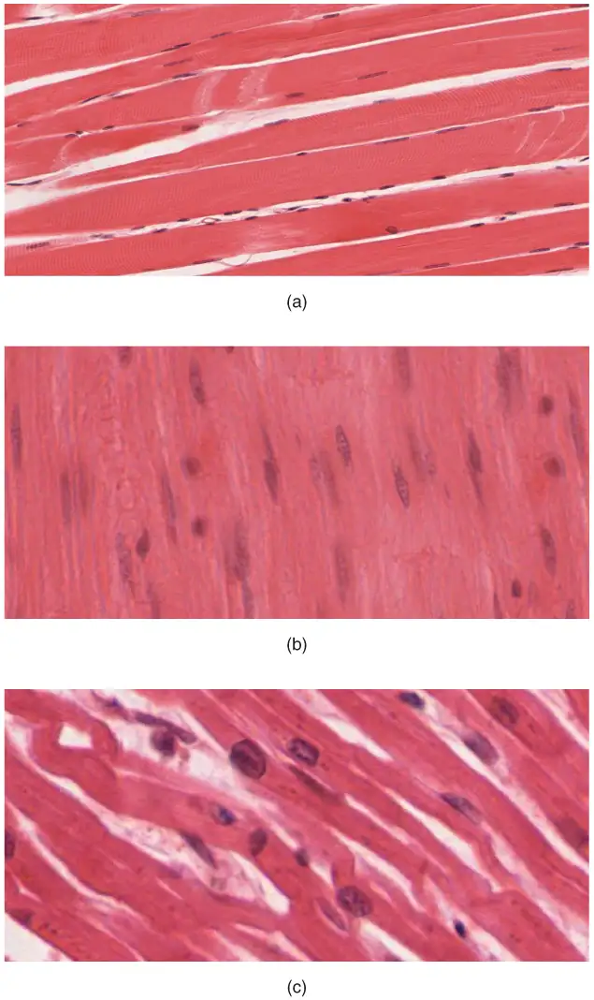
The muscles all begin the actual process of contracting (shortening) when a protein called actin is pulled by a protein called myosin. This occurs in striated muscle (skeletal and cardiac) after specific binding sites on the actin have been exposed in response to the interaction between calcium ions (Ca++) and proteins (troponin and tropomyosin) that “shield” the actin-binding sites. Ca++ also is required for the contraction of smooth muscle, although its role is different: here Ca++ activates enzymes, which in turn activate myosin heads. All muscles require adenosine triphosphate (ATP) to continue the process of contracting, and they all relax when the Ca++ is removed and the actin-binding sites are re-shielded.
A muscle can return to its original length when relaxed due to a quality of muscle tissue called elasticity. It can recoil back to its original length due to elastic fibers. Muscle tissue also has the quality of extensibility; it can stretch or extend. Contractility allows muscle tissue to pull on its attachment points and shorten with force.
Differences among the three muscle types include the microscopic organization of their contractile proteins—actin and myosin. The actin and myosin proteins are arranged very regularly in the cytoplasm of individual muscle cells (referred to as fibers) in both skeletal muscle and cardiac muscle, which creates a pattern, or stripes, called striations. The striations are visible with a light microscope under high magnification (see Figure 10.2). Skeletal muscle fibers are multinucleated structures that compose the skeletal muscle. Cardiac muscle fibers each have one to two nuclei and are physically and electrically connected to each other so that the entire heart contracts as one unit (called a syncytium).
Because the actin and myosin are not arranged in such regular fashion in smooth muscle, the cytoplasm of a smooth muscle fiber (which has only a single nucleus) has a uniform, nonstriated appearance (resulting in the name smooth muscle). However, the less organized appearance of smooth muscle should not be interpreted as less efficient. Smooth muscle in the walls of arteries is a critical component that regulates blood pressure necessary to push blood through the circulatory system; and smooth muscle in the skin, visceral organs, and internal passageways is essential for moving all materials through the body.
10.2 Skeletal Muscle¶
Learning Objectives
By the end of this section, you will be able to:
- Describe the layers of connective tissues packaging skeletal muscle
- Explain how muscles work with tendons to move the body
- Identify areas of the skeletal muscle fibers
- Describe excitation-contraction coupling
The best-known feature of skeletal muscle is its ability to contract and cause movement. Skeletal muscles act not only to produce movement but also to stop movement, such as resisting gravity to maintain posture. Small, constant adjustments of the skeletal muscles are needed to hold a body upright or balanced in any position. Muscles also prevent excess movement of the bones and joints, maintaining skeletal stability and preventing skeletal structure damage or deformation. Joints can become misaligned or dislocated entirely by pulling on the associated bones; muscles work to keep joints stable. Skeletal muscles are located throughout the body at the openings of internal tracts to control the movement of various substances. These muscles allow functions, such as swallowing, urination, and defecation, to be under voluntary control. Skeletal muscles also protect internal organs (particularly abdominal and pelvic organs) by acting as an external barrier or shield to external trauma and by supporting the weight of the organs.
Skeletal muscles contribute to the maintenance of homeostasis in the body by generating heat. Muscle contraction requires energy, and when ATP is broken down, heat is produced. This heat is very noticeable during exercise, when sustained muscle movement causes body temperature to rise, and in cases of extreme cold, when shivering produces random skeletal muscle contractions to generate heat.
Each skeletal muscle is an organ that consists of various integrated tissues. These tissues include the skeletal muscle fibers, blood vessels, nerve fibers, and connective tissue. Each skeletal muscle has three layers of connective tissue (called “mysia”) that enclose it and provide structure to the muscle as a whole, and also compartmentalize the muscle fibers within the muscle (Figure 10.3). Each muscle is wrapped in a sheath of dense, irregular connective tissue called the epimysium, which allows a muscle to contract and move powerfully while maintaining its structural integrity. The epimysium also separates muscle from other tissues and organs in the area, allowing the muscle to move independently.
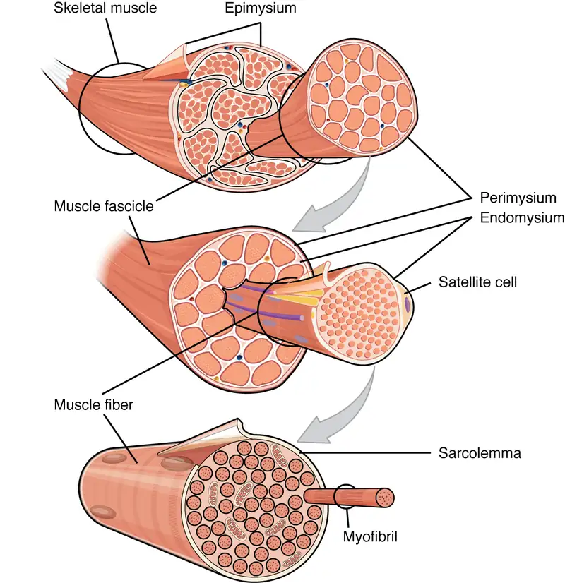
Inside each skeletal muscle, muscle fibers are organized into individual bundles, each called a fascicle, by a middle layer of connective tissue called the perimysium. This fascicular organization is common in muscles of the limbs; it allows the nervous system to trigger a specific movement of a muscle by activating a subset of muscle fibers within a bundle, or fascicle of the muscle. Inside each fascicle, each muscle fiber is encased in a thin connective tissue layer of collagen and reticular fibers called the endomysium. The endomysium contains the extracellular fluid and nutrients to support the muscle fiber. These nutrients are supplied via blood to the muscle tissue.
In skeletal muscles that work with tendons to pull on bones, the collagen in the three tissue layers (the mysia) intertwines with the collagen of a tendon. At the other end of the tendon, it fuses with the periosteum coating the bone. The tension created by contraction of the muscle fibers is then transferred through the mysia, to the tendon, and then to the periosteum to pull on the bone for movement of the skeleton. In other places, the mysia may fuse with a broad, tendon-like sheet called an aponeurosis, or to fascia, the connective tissue between skin and bones. The broad sheet of connective tissue in the lower back that the latissimus dorsi muscles (the “lats”) fuse into is an example of an aponeurosis.
Every skeletal muscle is also richly supplied by blood vessels for nourishment, oxygen delivery, and waste removal. In addition, every muscle fiber in a skeletal muscle is supplied by the axon branch of a somatic motor neuron, which signals the fiber to contract. Unlike cardiac and smooth muscle, the only way to functionally contract a skeletal muscle is through signaling from the nervous system.
Skeletal Muscle Fibers¶
Because skeletal muscle cells are long and cylindrical, they are commonly referred to as muscle fibers. Skeletal muscle fibers can be quite large for human cells, with diameters up to 100 μm and lengths up to 30 cm (11.8 in) in the Sartorius of the upper leg. During early development, embryonic myoblasts, each with its own nucleus, fuse with up to hundreds of other myoblasts to form the multinucleated skeletal muscle fibers. Multiple nuclei mean multiple copies of genes, permitting the production of the large amounts of proteins and enzymes needed for muscle contraction.
Some other terminology associated with muscle fibers is rooted in the Greek sarco, which means “flesh.” The plasma membrane of muscle fibers is called the sarcolemma, the cytoplasm is referred to as sarcoplasm, and the specialized smooth endoplasmic reticulum, which stores, releases, and retrieves calcium ions (Ca++) is called the sarcoplasmic reticulum (SR) (Figure 10.4). As will soon be described, the functional unit of a skeletal muscle fiber is the sarcomere, a highly organized arrangement of the contractile myofilaments actin (thin filament) and myosin (thick filament), along with other support proteins.
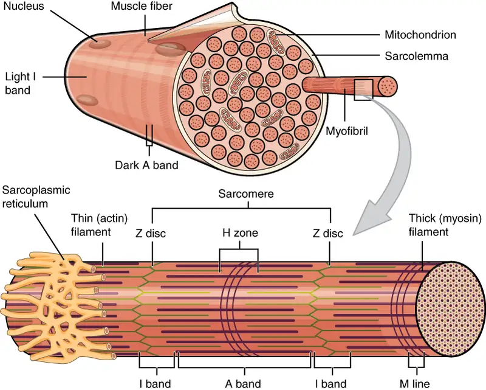
The Sarcomere¶
The striated appearance of skeletal muscle fibers is due to the arrangement of the myofilaments of actin and myosin in sequential order from one end of the muscle fiber to the other. Each packet of these microfilaments and their regulatory proteins, troponin and tropomyosin (along with other proteins) is called a sarcomere.
Interactive
Watch this video to learn more about macro- and microstructures of skeletal muscles. (a) What are the names of the “junction points” between sarcomeres? (b) What are the names of the “subunits” within the myofibrils that run the length of skeletal muscle fibers? (c) What is the “double strand of pearls” described in the video? (d) What gives a skeletal muscle fiber its striated appearance?
The sarcomere is the functional unit of the muscle fiber. The sarcomere itself is bundled within the myofibril that runs the entire length of the muscle fiber and attaches to the sarcolemma at its end. As myofibrils contract, the entire muscle cell contracts. Because myofibrils are only approximately 1.2 μm in diameter, hundreds to thousands (each with thousands of sarcomeres) can be found inside one muscle fiber. Each sarcomere is approximately 2 μm in length with a three-dimensional cylinder-like arrangement and is bordered by structures called Z-discs (also called Z-lines, because pictures are two-dimensional), to which the actin myofilaments are anchored (Figure 10.5). Because the actin and its troponin-tropomyosin complex (projecting from the Z-discs toward the center of the sarcomere) form strands that are thinner than the myosin, it is called the thin filament of the sarcomere. Likewise, because the myosin strands and their multiple heads (projecting from the center of the sarcomere, toward but not all to way to, the Z-discs) have more mass and are thicker, they are called the thick filament of the sarcomere.
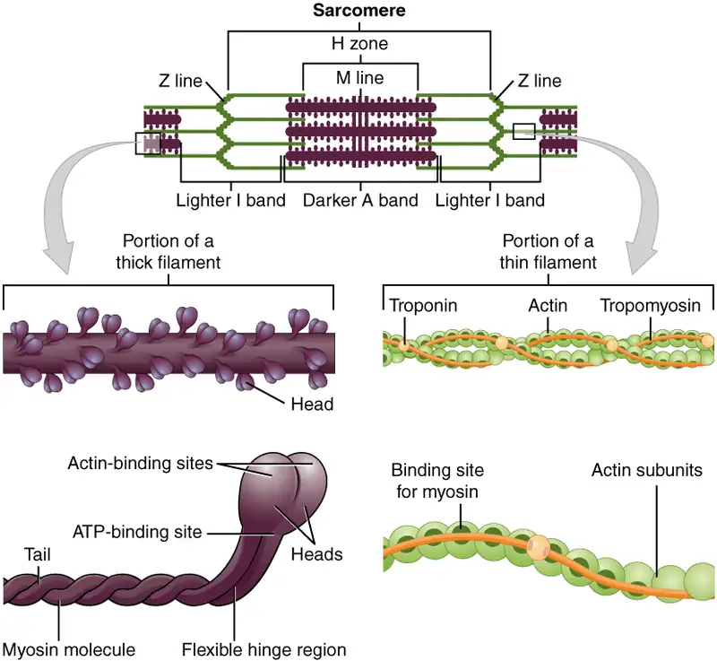
The Neuromuscular Junction¶
Another specialization of the skeletal muscle is the site where a motor neuron’s terminal meets the muscle fiber—called the neuromuscular junction (NMJ). This is where the muscle fiber first responds to signaling by the motor neuron. Every skeletal muscle fiber in every skeletal muscle is innervated by a motor neuron at the NMJ. Excitation signals from the neuron are the only way to functionally activate the fiber to contract.
Interactive
Every skeletal muscle fiber is supplied by a motor neuron at the NMJ. Watch this video to learn more about what happens at the NMJ. (a) What is the definition of a motor unit? (b) What is the structural and functional difference between a large motor unit and a small motor unit? (c) Can you give an example of each? (d) Why is the neurotransmitter acetylcholine degraded after binding to its receptor?
Excitation-Contraction Coupling¶
All living cells have membrane potentials, or electrical gradients across their membranes. The inside of the membrane is usually around -60 to -90 mV, relative to the outside. This is referred to as a cell’s membrane potential. Neurons and muscle cells can use their membrane potentials to generate electrical signals. They do this by controlling the movement of charged particles, called ions, across their membranes to create electrical currents. This is achieved by opening and closing specialized proteins in the membrane called ion channels. Although the currents generated by ions moving through these channel proteins are very small, they form the basis of both neural signaling and muscle contraction.
Both neurons and skeletal muscle cells are electrically excitable, meaning that they are able to generate action potentials. An action potential is a special type of electrical signal that can travel along a cell membrane as a wave. This allows a signal to be transmitted quickly and faithfully over long distances.
Although the term excitation-contraction coupling confuses or scares some students, it comes down to this: for a skeletal muscle fiber to contract, its membrane must first be “excited”—in other words, it must be stimulated to fire an action potential. The muscle fiber action potential, which sweeps along the sarcolemma as a wave, is “coupled” to the actual contraction through the release of calcium ions (Ca++) from the SR. Once released, the Ca++ interacts with the shielding proteins, forcing them to move aside so that the actin-binding sites are available for attachment by myosin heads. The myosin then pulls the actin filaments toward the center, shortening the muscle fiber.
In skeletal muscle, this sequence begins with signals from the somatic motor division of the nervous system. In other words, the “excitation” step in skeletal muscles is always triggered by signaling from the nervous system (Figure 10.6).
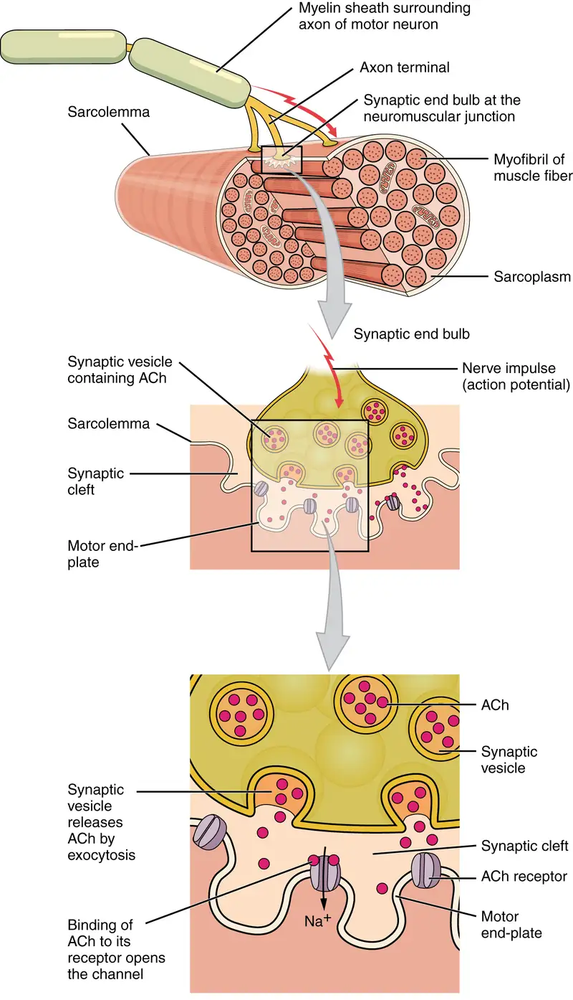
The motor neurons that tell the skeletal muscle fibers to contract originate in the spinal cord, with a smaller number located in the brainstem for activation of skeletal muscles of the face, head, and neck. These neurons have long processes, called axons, which are specialized to transmit action potentials long distances— in this case, all the way from the spinal cord to the muscle itself (which may be up to three feet away). The axons of multiple neurons bundle together to form nerves, like wires bundled together in a cable.
Signaling begins when a neuronal action potential travels along the axon of a motor neuron, and then along the individual branches to terminate at the NMJ. At the NMJ, the axon terminal releases a chemical messenger, or neurotransmitter, called acetylcholine (ACh). The ACh molecules diffuse across a minute space called the synaptic cleft and bind to ACh receptors located within the motor end-plate of the sarcolemma on the other side of the synapse. Once ACh binds, a channel in the ACh receptor opens and positively charged ions can pass through into the muscle fiber, causing it to depolarize, meaning that the membrane potential of the muscle fiber becomes less negative (closer to zero.)
As the membrane depolarizes, another set of ion channels called voltage-gated sodium channels are triggered to open. Sodium ions enter the muscle fiber, and an action potential rapidly spreads (or “fires”) along the entire membrane to initiate excitation-contraction coupling.
Things happen very quickly in the world of excitable membranes (just think about how quickly you can snap your fingers as soon as you decide to do it). Immediately following depolarization of the membrane, it repolarizes, re-establishing the negative membrane potential. Meanwhile, the ACh in the synaptic cleft is degraded by the enzyme acetylcholinesterase (AChE) so that the ACh cannot rebind to a receptor and reopen its channel, which would cause unwanted extended muscle excitation and contraction.
Propagation of an action potential along the sarcolemma is the excitation portion of excitation-contraction coupling. Recall that this excitation actually triggers the release of calcium ions (Ca++) from its storage in the cell’s SR. For the action potential to reach the membrane of the SR, there are periodic invaginations in the sarcolemma, called T-tubules (“T” stands for “transverse”). You will recall that the diameter of a muscle fiber can be up to 100 μm, so these T-tubules ensure that the membrane can get close to the SR in the sarcoplasm. The arrangement of a T-tubule with the membranes of SR on either side is called a triad (Figure 10.7). The triad surrounds the cylindrical structure called a myofibril, which contains actin and myosin.
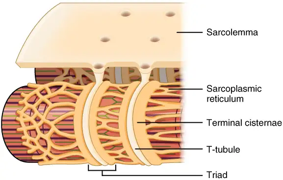
The T-tubules carry the action potential into the interior of the cell, which triggers the opening of calcium channels in the membrane of the adjacent SR, causing Ca++ to diffuse out of the SR and into the sarcoplasm. It is the arrival of Ca++ in the sarcoplasm that initiates contraction of the muscle fiber by its contractile units, or sarcomeres.
10.3 Muscle Fiber Contraction and Relaxation¶
Learning Objectives
By the end of this section, you will be able to:
- Describe the components involved in a muscle contraction
- Explain how muscles contract and relax
- Describe the sliding filament model of muscle contraction
The sequence of events that result in the contraction of an individual muscle fiber begins with a signal—the neurotransmitter, ACh—from the motor neuron innervating that fiber. The local membrane of the fiber will depolarize as positively charged sodium ions (Na+) enter, triggering an action potential that spreads to the rest of the membrane which will depolarize, including the T-tubules. This triggers the release of calcium ions (Ca++) from storage in the sarcoplasmic reticulum (SR). The Ca++ then initiates contraction, which is sustained by ATP (Figure 10.8). As long as Ca++ ions remain in the sarcoplasm to bind to troponin, which keeps the actin-binding sites “unshielded,” and as long as ATP is available to drive the cross-bridge cycling and the pulling of actin strands by myosin, the muscle fiber will continue to shorten to an anatomical limit.
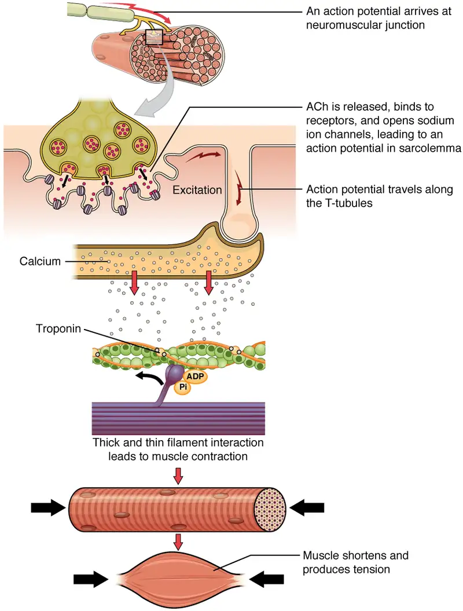
Muscle contraction usually stops when signaling from the motor neuron ends, which repolarizes the sarcolemma and T-tubules, and closes the voltage-gated calcium channels in the SR. Ca++ ions are then pumped back into the SR, which causes the tropomyosin to reshield (or re-cover) the binding sites on the actin strands. A muscle also can stop contracting when it runs out of ATP and becomes fatigued (Figure 10.9).
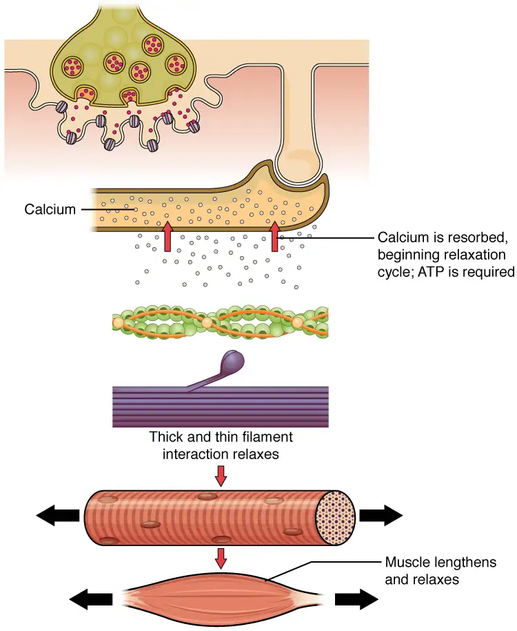
Interactive
The release of calcium ions initiates muscle contractions. Watch this video to learn more about the role of calcium. (a) What are “T-tubules” and what is their role? (b) Please describe how actin-binding sites are made available for cross-bridging with myosin heads during contraction.
The molecular events of muscle fiber shortening occur within the fiber’s sarcomeres (see Figure 10.10). The contraction of a striated muscle fiber occurs as the sarcomeres, linearly arranged within myofibrils, shorten as myosin heads pull on the actin filaments.
The region where thick and thin filaments overlap has a dense appearance, as there is little space between the filaments. This zone where thin and thick filaments overlap is very important to muscle contraction, as it is the site where filament movement starts. Thin filaments, anchored at their ends by the Z-discs, do not extend completely into the central region that only contains thick filaments, anchored at their bases at a spot called the M-line. A myofibril is composed of many sarcomeres running along its length; thus, myofibrils and muscle cells contract as the sarcomeres contract.
The Sliding Filament Model of Contraction¶
When signaled by a motor neuron, a skeletal muscle fiber contracts as the thin filaments are pulled and then slide past the thick filaments within the fiber’s sarcomeres. This process is known as the sliding filament model of muscle contraction (Figure 10.10). The sliding can only occur when myosin-binding sites on the actin filaments are exposed by a series of steps that begins with Ca++ entry into the sarcoplasm.
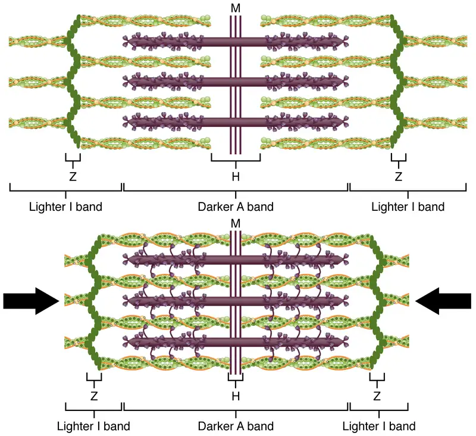
Tropomyosin is a protein that winds around the chains of the actin filament and covers the myosin-binding sites to prevent actin from binding to myosin. Tropomyosin binds to troponin to form a troponin-tropomyosin complex. The troponin-tropomyosin complex prevents the myosin “heads” from binding to the active sites on the actin microfilaments. Troponin also has a binding site for Ca++ ions.
To initiate muscle contraction, tropomyosin has to expose the myosin-binding site on an actin filament to allow cross-bridge formation between the actin and myosin microfilaments. The first step in the process of contraction is for Ca++ to bind to troponin so that tropomyosin can slide away from the binding sites on the actin strands. This allows the myosin heads to bind to these exposed binding sites and form cross-bridges. The thin filaments are then pulled by the myosin heads to slide past the thick filaments toward the center of the sarcomere. But each head can only pull a very short distance before it has reached its limit and must be “re-cocked” before it can pull again, a step that requires ATP.
ATP and Muscle Contraction¶
For thin filaments to continue to slide past thick filaments during muscle contraction, myosin heads must pull the actin at the binding sites, detach, re-cock, attach to more binding sites, pull, detach, re-cock, etc. This repeated movement is known as the cross-bridge cycle. This motion of the myosin heads is similar to the oars when an individual rows a boat: The paddle of the oars (the myosin heads) pull, are lifted from the water (detach), repositioned (re-cocked) and then immersed again to pull (Figure 10.11). Each cycle requires energy, and the action of the myosin heads in the sarcomeres repetitively pulling on the thin filaments also requires energy, which is provided by ATP.
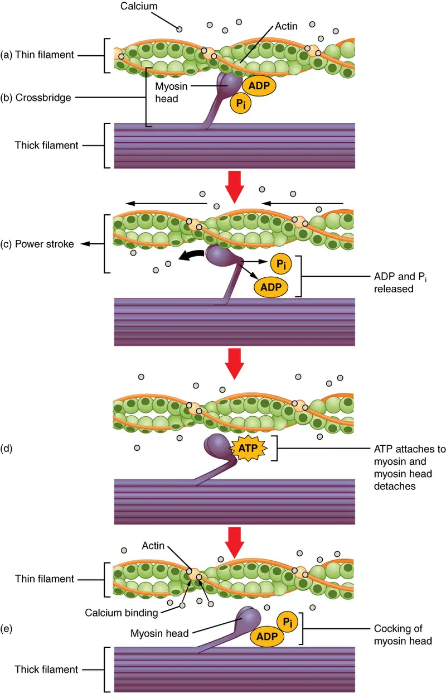
Cross-bridge formation occurs when the myosin head attaches to the actin while adenosine diphosphate (ADP) and inorganic phosphate (Pi) are still bound to myosin (Figure 10.11a,b). Pi is then released, causing myosin to form a stronger attachment to the actin, after which the myosin head moves toward the M-line, pulling the actin along with it. As actin is pulled, the filaments move approximately 10 nm toward the M-line. This movement is called the power stroke, as movement of the thin filament occurs at this step (Figure 10.11c). In the absence of ATP, the myosin head will not detach from actin.
One part of the myosin head attaches to the binding site on the actin, but the head has another binding site for ATP. ATP binding causes the myosin head to detach from the actin (Figure 10.11d). After this occurs, ATP is converted to ADP and Pi by the intrinsic ATPase activity of myosin. The energy released during ATP hydrolysis changes the angle of the myosin head into a cocked position (Figure 10.11e). The myosin head is now in position for further movement.
When the myosin head is cocked, myosin is in a high-energy configuration. This energy is expended as the myosin head moves through the power stroke, and at the end of the power stroke, the myosin head is in a low-energy position. After the power stroke, ADP is released; however, the formed cross-bridge is still in place, and actin and myosin are bound together. As long as ATP is available, it readily attaches to myosin, the cross-bridge cycle can recur, and muscle contraction can continue.
Note that each thick filament of roughly 300 myosin molecules has multiple myosin heads, and many cross-bridges form and break continuously during muscle contraction. Multiply this by all of the sarcomeres in one myofibril, all the myofibrils in one muscle fiber, and all of the muscle fibers in one skeletal muscle, and you can understand why so much energy (ATP) is needed to keep skeletal muscles working. In fact, it is the loss of ATP that results in the rigor mortis observed soon after someone dies. With no further ATP production possible, there is no ATP available for myosin heads to detach from the actin-binding sites, so the cross-bridges stay in place, causing the rigidity in the skeletal muscles.
Sources of ATP¶
ATP supplies the energy for muscle contraction to take place. In addition to its direct role in the cross-bridge cycle, ATP also provides the energy for the active-transport Ca++ pumps in the SR. Muscle contraction does not occur without sufficient amounts of ATP. The amount of ATP stored in muscle is very low, only sufficient to power a few seconds worth of contractions. As it is broken down, ATP must therefore be regenerated and replaced quickly to allow for sustained contraction. There are three mechanisms by which ATP can be regenerated in muscle cells: creatine phosphate metabolism, anaerobic glycolysis, and aerobic respiration.
Creatine phosphate is a molecule that can store energy in its phosphate bonds. In a resting muscle, excess ATP transfers its energy to creatine, producing ADP and creatine phosphate. This acts as an energy reserve that can be used to quickly create more ATP. When the muscle starts to contract and needs energy, creatine phosphate transfers its phosphate back to ADP to form ATP and creatine. This reaction is catalyzed by the enzyme creatine kinase and occurs very quickly; thus, creatine phosphate-derived ATP powers the first few seconds of muscle contraction. However, creatine phosphate can only provide approximately 15 seconds worth of energy, at which point another energy source has to be used (Figure 10.12).
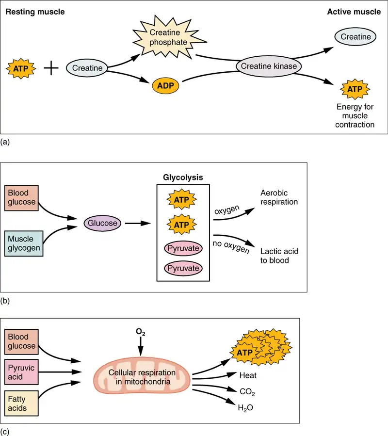
As the ATP produced by creatine phosphate is depleted, muscles turn to glycolysis as an ATP source. Glycolysis is an anaerobic (non-oxygen-dependent) process that breaks down glucose (sugar) to produce ATP; however, glycolysis cannot generate ATP as quickly as creatine phosphate. Thus, the switch to glycolysis results in a slower rate of ATP availability to the muscle. The sugar used in glycolysis can be provided by blood glucose or by metabolizing glycogen that is stored in the muscle. The breakdown of one glucose molecule produces two ATP and two molecules of pyruvic acid, which can be used in aerobic respiration or when oxygen levels are low, converted to lactic acid (Figure 10.12b).
If oxygen is available, pyruvic acid is used in aerobic respiration. However, if oxygen is not available, pyruvic acid is converted to lactic acid, which may contribute to muscle fatigue. This conversion allows the recycling of the enzyme NAD+ from NADH, which is needed for glycolysis to continue. This occurs during strenuous exercise when high amounts of energy are needed but oxygen cannot be sufficiently delivered to muscle. Glycolysis itself cannot be sustained for very long (approximately 1 minute of muscle activity), but it is useful in facilitating short bursts of high-intensity output. This is because glycolysis does not utilize glucose very efficiently, producing a net gain of two ATPs per molecule of glucose, and the end product of lactic acid, which may contribute to muscle fatigue as it accumulates.
Aerobic respiration is the breakdown of glucose or other nutrients in the presence of oxygen (O2) to produce carbon dioxide, water, and ATP. Approximately 95 percent of the ATP required for resting or moderately active muscles is provided by aerobic respiration, which takes place in mitochondria. The inputs for aerobic respiration include glucose circulating in the bloodstream, pyruvic acid, and fatty acids. Aerobic respiration is much more efficient than anaerobic glycolysis, producing approximately 36 ATPs per molecule of glucose versus four from glycolysis. However, aerobic respiration cannot be sustained without a steady supply of O2 to the skeletal muscle and is much slower (Figure 10.12c). To compensate, muscles store a small amount of excess oxygen in proteins called myoglobin, allowing for more efficient muscle contractions and less fatigue. Aerobic training also increases the efficiency of the circulatory system so that O2 can be supplied to the muscles for longer periods of time.
Muscle fatigue occurs when a muscle can no longer contract in response to signals from the nervous system. The exact causes of muscle fatigue are not fully known, although certain factors have been correlated with the decreased muscle contraction that occurs during fatigue. ATP is needed for normal muscle contraction, and as ATP reserves are reduced, muscle function may decline. This may be more of a factor in brief, intense muscle output rather than sustained, lower intensity efforts. Lactic acid buildup may lower intracellular pH, affecting enzyme and protein activity. Imbalances in Na+ and K+ levels as a result of membrane depolarization may disrupt Ca++ flow out of the SR. Long periods of sustained exercise may damage the SR and the sarcolemma, resulting in impaired Ca++ regulation.
Intense muscle activity results in an oxygen debt, which is the amount of oxygen needed to compensate for ATP produced without oxygen during muscle contraction. Oxygen is required to restore ATP and creatine phosphate levels, convert lactic acid to pyruvic acid, and, in the liver, to convert lactic acid into glucose or glycogen. Other systems used during exercise also require oxygen, and all of these combined processes result in the increased breathing rate that occurs after exercise. Until the oxygen debt has been met, oxygen intake is elevated, even after exercise has stopped.
Relaxation of a Skeletal Muscle¶
Relaxing skeletal muscle fibers, and ultimately, the skeletal muscle, begins with the motor neuron, which stops releasing its chemical signal, ACh, into the synapse at the NMJ. The muscle fiber will repolarize, which closes the gates in the SR where Ca++ was being released. ATP-driven pumps will move Ca++ out of the sarcoplasm back into the SR. This results in the “reshielding” of the actin-binding sites on the thin filaments. Without the ability to form cross-bridges between the thin and thick filaments, the muscle fiber loses its tension and relaxes.
Muscle Strength¶
The number of skeletal muscle fibers in a given muscle is genetically determined and does not change. Muscle strength is directly related to the amount of myofibrils and sarcomeres within each fiber. Factors, such as hormones and stress (and artificial anabolic steroids), acting on the muscle can increase the production of sarcomeres and myofibrils within the muscle fibers, a change called hypertrophy, which results in the increased mass and bulk in a skeletal muscle. Likewise, decreased use of a skeletal muscle results in atrophy, where the number of sarcomeres and myofibrils disappear (but not the number of muscle fibers). It is common for a limb in a cast to show atrophied muscles when the cast is removed, and certain diseases, such as polio, show atrophied muscles.
Disorders of the Muscular System
Duchenne muscular dystrophy (DMD) is a progressive weakening of the skeletal muscles. It is one of several diseases collectively referred to as “muscular dystrophy.” DMD is caused by a lack of the protein dystrophin, which helps the thin filaments of myofibrils bind to the sarcolemma. Without sufficient dystrophin, muscle contractions cause the sarcolemma to tear, causing an influx of Ca++, leading to cellular damage and muscle fiber degradation. Over time, as muscle damage accumulates, muscle mass is lost, and greater functional impairments develop.
DMD is an inherited disorder caused by an abnormal X chromosome. It primarily affects males, and it is usually diagnosed in early childhood. DMD usually first appears as difficulty with balance and motion, and then progresses to an inability to walk. It continues progressing upward in the body from the lower extremities to the upper body, where it affects the muscles responsible for breathing and circulation. It ultimately causes death due to respiratory failure, and those afflicted do not usually live past their 20s.
Because DMD is caused by a mutation in the gene that codes for dystrophin, it was thought that introducing healthy myoblasts into patients might be an effective treatment. Myoblasts are the embryonic cells responsible for muscle development, and ideally, they would carry healthy genes that could produce the dystrophin needed for normal muscle contraction. This approach has been largely unsuccessful in humans. A recent approach has involved attempting to boost the muscle’s production of utrophin, a protein similar to dystrophin that may be able to assume the role of dystrophin and prevent cellular damage from occurring.
10.4 Nervous System Control of Muscle Tension¶
Learning Objectives
By the end of this section, you will be able to:
- Explain concentric, isotonic, and eccentric contractions
- Describe the length-tension relationship
- Describe the three phases of a muscle twitch
- Define wave summation, tetanus, and treppe
To move an object, referred to as load, the sarcomeres in the muscle fibers of the skeletal muscle must shorten. The force generated by the contraction of the muscle (or shortening of the sarcomeres) is called muscle tension. However, muscle tension also is generated when the muscle is contracting against a load that does not move, resulting in two main types of skeletal muscle contractions: isotonic contractions and isometric contractions.
In isotonic contractions, where the tension in the muscle stays constant, a load is moved as the length of the muscle changes (shortens). There are two types of isotonic contractions: concentric and eccentric. A concentric contraction involves the muscle shortening to move a load. An example of this is the biceps brachii muscle contracting when a hand weight is brought upward with increasing muscle tension. As the biceps brachii contract, the angle of the elbow joint decreases as the forearm is brought toward the body. Here, the biceps brachii contracts as sarcomeres in its muscle fibers are shortening and cross-bridges form; the myosin heads pull the actin. An eccentric contraction occurs as the muscle tension diminishes and the muscle lengthens. In this case, the hand weight is lowered in a slow and controlled manner as the amount of cross-bridges being activated by nervous system stimulation decreases. In this case, as tension is released from the biceps brachii, the angle of the elbow joint increases. Eccentric contractions are also used for movement and balance of the body.
An isometric contraction occurs as the muscle produces tension without changing the angle of a skeletal joint. Isometric contractions involve sarcomere shortening and increasing muscle tension, but do not move a load, as the force produced cannot overcome the resistance provided by the load. For example, if one attempts to lift a hand weight that is too heavy, there will be sarcomere activation and shortening to a point, and ever-increasing muscle tension, but no change in the angle of the elbow joint. In everyday living, isometric contractions are active in maintaining posture and maintaining bone and joint stability. However, holding your head in an upright position occurs not because the muscles cannot move the head, but because the goal is to remain stationary and not produce movement. Most actions of the body are the result of a combination of isotonic and isometric contractions working together to produce a wide range of outcomes (Figure 10.13).
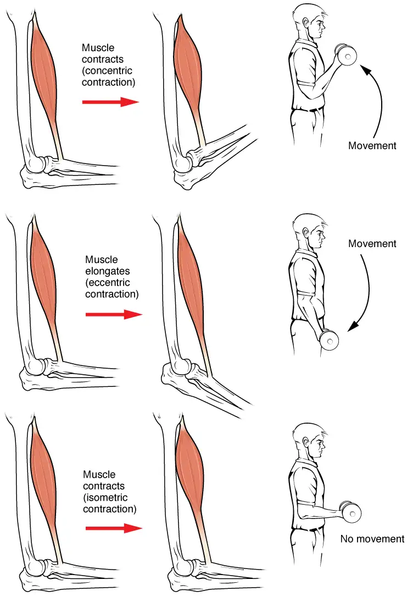
All of these muscle activities are under the exquisite control of the nervous system. Neural control regulates concentric, eccentric and isometric contractions, muscle fiber recruitment, and muscle tone. A crucial aspect of nervous system control of skeletal muscles is the role of motor units.
Motor Units¶
As you have learned, every skeletal muscle fiber must be innervated by the axon terminal of a motor neuron in order to contract. Each muscle fiber is innervated by only one motor neuron. The actual group of muscle fibers in a muscle innervated by a single motor neuron is called a motor unit. The size of a motor unit is variable depending on the nature of the muscle.
A small motor unit is an arrangement where a single motor neuron supplies a small number of muscle fibers in a muscle. Small motor units permit very fine motor control of the muscle. The best example in humans is the small motor units of the extraocular eye muscles that move the eyeballs. There are thousands of muscle fibers in each muscle, but every six or so fibers are supplied by a single motor neuron, as the axons branch to form synaptic connections at their individual NMJs. This allows for exquisite control of eye movements so that both eyes can quickly focus on the same object. Small motor units are also involved in the many fine movements of the fingers and thumb of the hand for grasping, texting, etc.
A large motor unit is an arrangement where a single motor neuron supplies a large number of muscle fibers in a muscle. Large motor units are concerned with simple, or “gross,” movements, such as powerfully extending the knee joint. The best example is the large motor units of the thigh muscles or back muscles, where a single motor neuron will supply thousands of muscle fibers in a muscle, as its axon splits into thousands of branches.
There is a wide range of motor units within many skeletal muscles, which gives the nervous system a wide range of control over the muscle. The small motor units in the muscle will have smaller, lower-threshold motor neurons that are more excitable, firing first to their skeletal muscle fibers, which also tend to be the smallest. Activation of these smaller motor units, results in a relatively small degree of contractile strength (tension) generated in the muscle. As more strength is needed, larger motor units, with bigger, higher-threshold motor neurons are enlisted to activate larger muscle fibers. This increasing activation of motor units produces an increase in muscle contraction known as recruitment. As more motor units are recruited, the muscle contraction grows progressively stronger. In some muscles, the largest motor units may generate a contractile force of 50 times more than the smallest motor units in the muscle. This allows a feather to be picked up using the biceps brachii arm muscle with minimal force, and a heavy weight to be lifted by the same muscle by recruiting the largest motor units.
When necessary, the maximal number of motor units in a muscle can be recruited simultaneously, producing the maximum force of contraction for that muscle, but this cannot last for very long because of the energy requirements to sustain the contraction. To prevent complete muscle fatigue, motor units are generally not all simultaneously active, but instead some motor units rest while others are active, which allows for longer muscle contractions. The nervous system uses recruitment as a mechanism to efficiently utilize a skeletal muscle.
The Length-Tension Range of a Sarcomere¶
When a skeletal muscle fiber contracts, myosin heads attach to actin to form cross-bridges followed by the thin filaments sliding over the thick filaments as the heads pull the actin, and this results in sarcomere shortening, creating the tension of the muscle contraction. The cross-bridges can only form where thin and thick filaments already overlap, so that the length of the sarcomere has a direct influence on the force generated when the sarcomere shortens. This is called the length-tension relationship.
The ideal length of a sarcomere to produce maximal tension occurs at 80 percent to 120 percent of its resting length, with 100 percent being the state where the medial edges of the thin filaments are just at the most-medial myosin heads of the thick filaments (Figure 10.14). This length maximizes the overlap of actin-binding sites and myosin heads. If a sarcomere is stretched past this ideal length (beyond 120 percent), thick and thin filaments do not overlap sufficiently, which results in less tension produced. If a sarcomere is shortened beyond 80 percent, the zone of overlap is reduced with the thin filaments jutting beyond the last of the myosin heads and shrinks the H zone, which is normally composed of myosin tails. Eventually, there is nowhere else for the thin filaments to go and the amount of tension is diminished. If the muscle is stretched to the point where thick and thin filaments do not overlap at all, no cross-bridges can be formed, and no tension is produced in that sarcomere. This amount of stretching does not usually occur, as accessory proteins and connective tissue oppose extreme stretching.
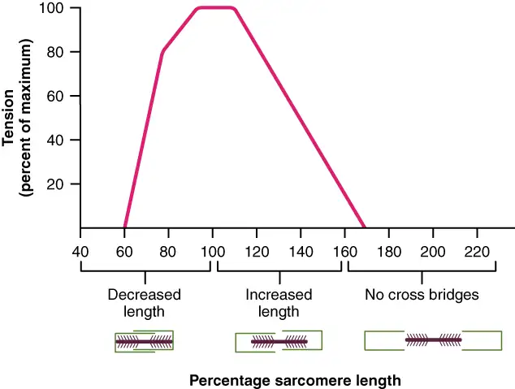
The Frequency of Motor Neuron Stimulation¶
A single action potential from a motor neuron will produce a single contraction in the muscle fibers of its motor unit. This isolated contraction is called a twitch. A twitch can last for a few milliseconds or 100 milliseconds, depending on the muscle type. The tension produced by a single twitch can be measured by a myogram, an instrument that measures the amount of tension produced over time (Figure 10.15). Each twitch undergoes three phases. The first phase is the latent period, during which the action potential is being propagated along the sarcolemma and Ca++ ions are released from the SR. This is the phase during which excitation and contraction are being coupled but contraction has yet to occur. The contraction phase occurs next. The Ca++ ions in the sarcoplasm have bound to troponin, tropomyosin has shifted away from myosin-binding sites on actin, cross-bridges have formed, and sarcomeres are actively shortening to the point of peak tension. The last phase is the relaxation phase, when tension decreases as contraction stops. Ca++ ions are pumped out of the sarcoplasm into the SR, and cross-bridge cycling stops, returning the muscle fibers to their resting state.
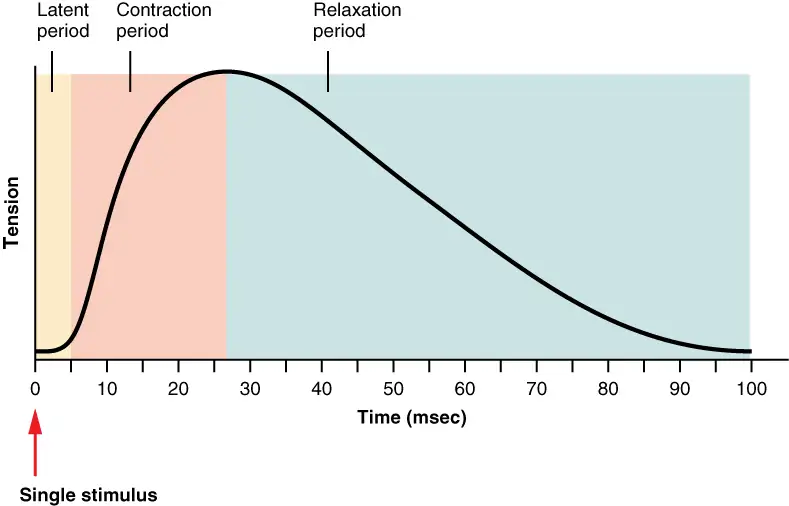
Although a person can experience a muscle “twitch,” a single twitch does not produce any significant muscle activity in a living body. A series of action potentials to the muscle fibers is necessary to produce a muscle contraction that can produce work. A normal muscle contraction is more sustained, and it can be modified by input from the nervous system to produce varying amounts of force; this is called a graded muscle response. The frequency of action potentials (nerve impulses) from a motor neuron and the number of motor neurons transmitting action potentials both affect the tension produced in skeletal muscle.
The rate at which a motor neuron fires action potentials affects the tension produced in the skeletal muscle. If the fibers are stimulated while a previous twitch is still occurring, the second twitch will be stronger. This response is called wave summation, because the excitation-contraction coupling effects of successive motor neuron signaling are summed, or added together (Figure 10.16a). At the molecular level, summation occurs because the second stimulus triggers the release of more Ca++ ions, which become available to activate additional sarcomeres while the muscle is still contracting from the first stimulus. Summation results in greater contraction of the motor unit.
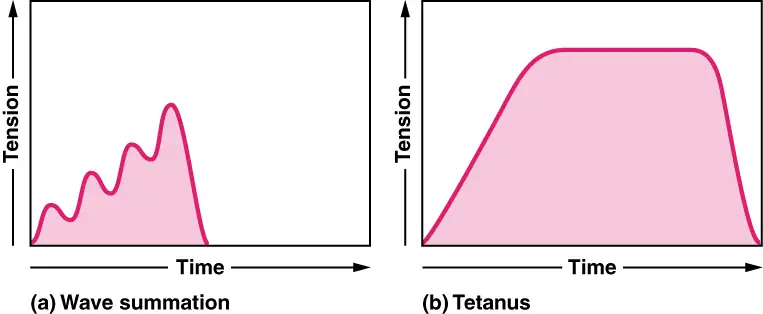
If the frequency of motor neuron signaling increases, summation and subsequent muscle tension in the motor unit continues to rise until it reaches a peak point. The tension at this point is about three to four times greater than the tension of a single twitch, a state referred to as incomplete tetanus. During incomplete tetanus, the muscle goes through quick cycles of contraction with a short relaxation phase for each. If the stimulus frequency is so high that the relaxation phase disappears completely, contractions become continuous in a process called complete tetanus (Figure 10.16b).
During tetanus, the concentration of Ca++ ions in the sarcoplasm allows virtually all of the sarcomeres to form cross-bridges and shorten, so that a contraction can continue uninterrupted (until the muscle fatigues and can no longer produce tension).
Treppe¶
When a skeletal muscle has been dormant for an extended period and then activated to contract, with all other things being equal, the initial contractions generate about one-half the force of later contractions. The muscle tension increases in a graded manner that to some looks like a set of stairs. This tension increase is called treppe, a condition where muscle contractions become more efficient. It’s also known as the “staircase effect” (Figure 10.17).
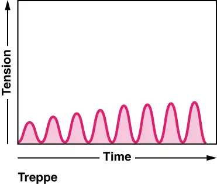
It is believed that treppe results from a higher concentration of Ca++ in the sarcoplasm resulting from the steady stream of signals from the motor neuron. It can only be maintained with adequate ATP.
Muscle Tone¶
Skeletal muscles are rarely completely relaxed, or flaccid. Even if a muscle is not producing movement, it is contracted a small amount to maintain its contractile proteins and produce muscle tone. The tension produced by muscle tone allows muscles to continually stabilize joints and maintain posture.
Muscle tone is accomplished by a complex interaction between the nervous system and skeletal muscles that results in the activation of a few motor units at a time, most likely in a cyclical manner. In this manner, muscles never fatigue completely, as some motor units can recover while others are active.
The absence of the low-level contractions that lead to muscle tone is referred to as hypotonia, and can result from damage to parts of the central nervous system (CNS), such as the cerebellum, or from loss of innervations to a skeletal muscle, as in poliomyelitis. Hypotonic muscles have a flaccid appearance and display functional impairments, such as weak reflexes. Conversely, excessive muscle tone is referred to as hypertonia, accompanied by hyperreflexia (excessive reflex responses), often the result of damage to upper motor neurons in the CNS. Hypertonia can present with muscle rigidity (as seen in Parkinson’s disease) or spasticity, a phasic change in muscle tone, where a limb will “snap” back from passive stretching (as seen in some strokes).
10.5 Types of Muscle Fibers¶
Learning Objectives
By the end of this section, you will be able to:
- Describe the types of skeletal muscle fibers
- Explain fast and slow muscle fibers
Two criteria to consider when classifying the types of muscle fibers are how fast some fibers contract relative to others, and how fibers produce ATP. Using these criteria, there are three main types of skeletal muscle fibers. Slow oxidative (SO) fibers contract relatively slowly and use aerobic respiration (oxygen and glucose) to produce ATP. Fast oxidative (FO) fibers have fast contractions and primarily use aerobic respiration, but because they may switch to anaerobic respiration (glycolysis), can fatigue more quickly than SO fibers. Lastly, fast glycolytic (FG) fibers have fast contractions and primarily use anaerobic glycolysis. The FG fibers fatigue more quickly than the others. Most skeletal muscles in a human contain(s) all three types, although in varying proportions.
The speed of contraction is dependent on how quickly myosin’s ATPase hydrolyzes ATP to produce cross-bridge action. Fast fibers hydrolyze ATP approximately twice as quickly as slow fibers, resulting in much quicker cross-bridge cycling (which pulls the thin filaments toward the center of the sarcomeres at a faster rate). The primary metabolic pathway used by a muscle fiber determines whether the fiber is classified as oxidative or glycolytic. If a fiber primarily produces ATP through aerobic pathways it is oxidative. More ATP can be produced during each metabolic cycle, making the fiber more resistant to fatigue. Glycolytic fibers primarily create ATP through anaerobic glycolysis, which produces less ATP per cycle. As a result, glycolytic fibers fatigue at a quicker rate.
The oxidative fibers contain many more mitochondria than the glycolytic fibers, because aerobic metabolism, which uses oxygen (O2) in the metabolic pathway, occurs in the mitochondria. The SO fibers possess a large number of mitochondria and are capable of contracting for longer periods because of the large amount of ATP they can produce, but they have a relatively small diameter and do not produce a large amount of tension. SO fibers are extensively supplied with blood capillaries to supply O2 from the red blood cells in the bloodstream. The SO fibers also possess myoglobin, an O2-carrying molecule similar to O2-carrying hemoglobin in the red blood cells. The myoglobin stores some of the needed O2 within the fibers themselves (and gives SO fibers their red color). All of these features allow SO fibers to produce large quantities of ATP, which can sustain muscle activity without fatiguing for long periods of time.
The fact that SO fibers can function for long periods without fatiguing makes them useful in maintaining posture, producing isometric contractions, stabilizing bones and joints, and making small movements that happen often but do not require large amounts of energy. They do not produce high tension, and thus they are not used for powerful, fast movements that require high amounts of energy and rapid cross-bridge cycling.
FO fibers are sometimes called intermediate fibers because they possess characteristics that are intermediate between fast fibers and slow fibers. They produce ATP relatively quickly, more quickly than SO fibers, and thus can produce relatively high amounts of tension. They are oxidative because they produce ATP aerobically, possess high amounts of mitochondria, and do not fatigue quickly. However, FO fibers do not possess significant myoglobin, giving them a lighter color than the red SO fibers. FO fibers are used primarily for movements, such as walking, that require more energy than postural control but less energy than an explosive movement, such as sprinting. FO fibers are useful for this type of movement because they produce more tension than SO fibers but they are more fatigue-resistant than FG fibers.
FG fibers primarily use anaerobic glycolysis as their ATP source. They have a large diameter and possess high amounts of glycogen, which is used in glycolysis to generate ATP quickly to produce high levels of tension. Because they do not primarily use aerobic metabolism, they do not possess substantial numbers of mitochondria or significant amounts of myoglobin and therefore have a white color. FG fibers are used to produce rapid, forceful contractions to make quick, powerful movements. These fibers fatigue quickly, permitting them to only be used for short periods. Most muscles possess a mixture of each fiber type. The predominant fiber type in a muscle is determined by the primary function of the muscle.
10.6 Exercise and Muscle Performance¶
Learning Objectives
By the end of this section, you will be able to:
- Describe hypertrophy and atrophy
- Explain how resistance exercise builds muscle
- Explain how performance-enhancing substances affect muscle
Physical training alters the appearance of skeletal muscles and can produce changes in muscle performance. Conversely, a lack of use can result in decreased performance and muscle appearance. Although muscle cells can change in size, new cells are not formed when muscles grow. Instead, structural proteins are added to muscle fibers in a process called hypertrophy, so cell diameter increases. The reverse, when structural proteins are lost and muscle mass decreases, is called atrophy. Age-related muscle atrophy is called sarcopenia. Cellular components of muscles can also undergo changes in response to changes in muscle use.
Endurance Exercise¶
Slow fibers are predominantly used in endurance exercises that require little force but involve numerous repetitions. The aerobic metabolism used by slow-twitch fibers allows them to maintain contractions over long periods. Endurance training modifies these slow fibers to make them even more efficient by producing more mitochondria to enable more aerobic metabolism and more ATP production. Endurance exercise can also increase the amount of myoglobin in a cell, as increased aerobic respiration increases the need for oxygen. Myoglobin is found in the sarcoplasm and acts as an oxygen storage supply for the mitochondria.
The training can trigger the formation of more extensive capillary networks around the fiber, a process called angiogenesis, to supply oxygen and remove metabolic waste. To allow these capillary networks to supply the deep portions of the muscle, muscle mass does not greatly increase in order to maintain a smaller area for the diffusion of nutrients and gases. All of these cellular changes result in the ability to sustain low levels of muscle contractions for greater periods without fatiguing.
The proportion of SO muscle fibers in muscle determines the suitability of that muscle for endurance, and may benefit those participating in endurance activities. Postural muscles have a large number of SO fibers and relatively few FO and FG fibers, to keep the back straight (Figure 10.18). Endurance athletes, like marathon-runners also would benefit from a larger proportion of SO fibers, but it is unclear if the most-successful marathoners are those with naturally high numbers of SO fibers, or whether the most successful marathon runners develop high numbers of SO fibers with repetitive training. Endurance training can result in overuse injuries such as stress fractures and joint and tendon inflammation.
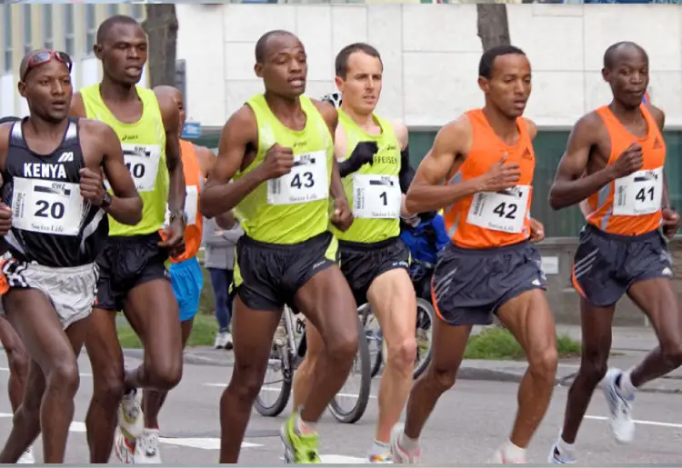
Resistance Exercise¶
Resistance exercises, as opposed to endurance exercise, require large amounts of FG fibers to produce short, powerful movements that are not repeated over long periods. The high rates of ATP hydrolysis and cross-bridge formation in FG fibers result in powerful muscle contractions. Muscles used for power have a higher ratio of FG to SO/FO fibers, and trained athletes possess even higher levels of FG fibers in their muscles. Resistance exercise affects muscles by increasing the formation of myofibrils, thereby increasing the thickness of muscle fibers. This added structure causes hypertrophy, or the enlargement of muscles, exemplified by the large skeletal muscles seen in body builders and other athletes (Figure 10.19). Because this muscular enlargement is achieved by the addition of structural proteins, athletes trying to build muscle mass often ingest large amounts of protein.
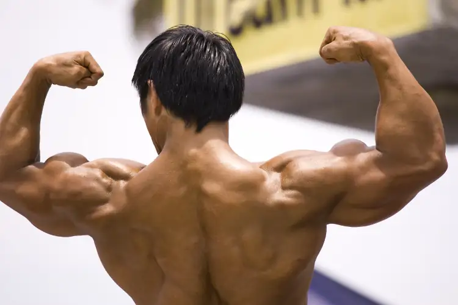
Except for the hypertrophy that follows an increase in the number of sarcomeres and myofibrils in a skeletal muscle, the cellular changes observed during endurance training do not usually occur with resistance training. There is usually no significant increase in mitochondria or capillary density. However, resistance training does increase the development of connective tissue, which adds to the overall mass of the muscle and helps to contain muscles as they produce increasingly powerful contractions. Tendons also become stronger to prevent tendon damage, as the force produced by muscles is transferred to tendons that attach the muscle to bone.
For effective strength training, the intensity of the exercise must continually be increased. For instance, continued weight lifting without increasing the weight of the load does not increase muscle size. To produce ever-greater results, the weights lifted must become increasingly heavier, making it more difficult for muscles to move the load. The muscle then adapts to this heavier load, and an even heavier load must be used if even greater muscle mass is desired.
If done improperly, resistance training can lead to overuse injuries of the muscle, tendon, or bone. These injuries can occur if the load is too heavy or if the muscles are not given sufficient time between workouts to recover or if joints are not aligned properly during the exercises. Cellular damage to muscle fibers that occurs after intense exercise includes damage to the sarcolemma and myofibrils. This muscle damage contributes to the feeling of soreness after strenuous exercise, but muscles gain mass as this damage is repaired, and additional structural proteins are added to replace the damaged ones. Overworking skeletal muscles can also lead to tendon damage and even skeletal damage if the load is too great for the muscles to bear.
Performance-Enhancing Substances¶
Some athletes attempt to boost their performance by using various agents that may enhance muscle performance. Anabolic steroids are one of the more widely known agents used to boost muscle mass and increase power output. Anabolic steroids are a form of testosterone, a male sex hormone that stimulates muscle formation, leading to increased muscle mass.
Endurance athletes may also try to boost the availability of oxygen to muscles to increase aerobic respiration by using substances such as erythropoietin (EPO), a hormone normally produced in the kidneys, which triggers the production of red blood cells. The extra oxygen carried by these blood cells can then be used by muscles for aerobic respiration. Human growth hormone (hGH) is another supplement, and although it can facilitate building muscle mass, its main role is to promote the healing of muscle and other tissues after strenuous exercise. Increased hGH may allow for faster recovery after muscle damage, reducing the rest required after exercise, and allowing for more sustained high-level performance.
Although performance-enhancing substances often do improve performance, most are banned by governing bodies in sports and are illegal for nonmedical purposes. Their use to enhance performance raises ethical issues of cheating because they give users an unfair advantage over nonusers. A greater concern, however, is that their use carries serious health risks. The side effects of these substances are often significant, nonreversible, and in some cases fatal. The physiological strain caused by these substances is often greater than what the body can handle, leading to effects that are unpredictable and dangerous. Anabolic steroid use has been linked to infertility, aggressive behavior, cardiovascular disease, and brain cancer.
Similarly, some athletes have used creatine to increase power output. Creatine phosphate provides quick bursts of ATP to muscles in the initial stages of contraction. Increasing the amount of creatine available to cells is thought to produce more ATP and therefore increase explosive power output, although its effectiveness as a supplement has been questioned.
Everyday Connection: Aging and Muscle Tissue
Although atrophy due to disuse can often be reversed with exercise, muscle atrophy with age, referred to as sarcopenia, is irreversible. This is a primary reason why even highly trained athletes succumb to declining performance with age. This decline is noticeable in athletes whose sports require strength and powerful movements, such as sprinting, whereas the effects of age are less noticeable in endurance athletes such as marathon runners or long-distance cyclists. As muscles age, muscle fibers die, and they are replaced by connective tissue and adipose tissue (Figure 10.20). Because those tissues cannot contract and generate force as muscle can, muscles lose the ability to produce powerful contractions. The decline in muscle mass causes a loss of strength, including the strength required for posture and mobility. This may be caused by a reduction in FG fibers that hydrolyze ATP quickly to produce short, powerful contractions. Muscles in older people sometimes possess greater numbers of SO fibers, which are responsible for longer contractions and do not produce powerful movements. There may also be a reduction in the size of motor units, resulting in fewer fibers being stimulated and less muscle tension being produced.
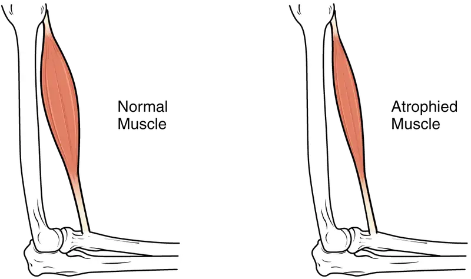
Sarcopenia can be delayed to some extent by exercise, as training adds structural proteins and causes cellular changes that can offset the effects of atrophy. Increased exercise can produce greater numbers of cellular mitochondria, increase capillary density, and increase the mass and strength of connective tissue. The effects of age-related atrophy are especially pronounced in people who are sedentary, as the loss of muscle cells is displayed as functional impairments such as trouble with locomotion, balance, and posture. This can lead to a decrease in quality of life and medical problems, such as joint problems because the muscles that stabilize bones and joints are weakened. Problems with locomotion and balance can also cause various injuries due to falls.
10.7 Cardiac Muscle Tissue¶
Learning Objectives
By the end of this section, you will be able to:
- Describe intercalated discs and gap junctions
- Describe a desmosome
Cardiac muscle tissue is only found in the heart. Highly coordinated contractions of cardiac muscle pump blood into the vessels of the circulatory system. Similar to skeletal muscle, cardiac muscle is striated and organized into sarcomeres, possessing the same banding organization as skeletal muscle (Figure 10.21). However, cardiac muscle fibers are shorter than skeletal muscle fibers and usually contain only one nucleus, which is located in the central region of the cell. Cardiac muscle fibers also possess many mitochondria and myoglobin, as ATP is produced primarily through aerobic metabolism. Cardiac muscle fibers cells also are extensively branched and are connected to one another at their ends by intercalated discs. An intercalated disc allows the cardiac muscle cells to contract in a wave-like pattern so that the heart can work as a pump.
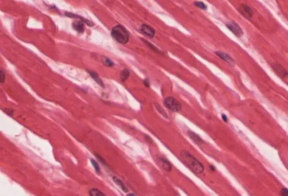
Interactive
View the University of Michigan WebScope to explore the tissue sample in greater detail.
Intercalated discs are part of the sarcolemma and contain two structures important in cardiac muscle contraction: gap junctions and desmosomes. A gap junction forms channels between adjacent cardiac muscle fibers that allow the depolarizing current produced by cations to flow from one cardiac muscle cell to the next. This joining is called electric coupling, and in cardiac muscle it allows the quick transmission of action potentials and the coordinated contraction of the entire heart. This network of electrically connected cardiac muscle cells creates a functional unit of contraction called a syncytium. The remainder of the intercalated disc is composed of desmosomes. A desmosome is a cell structure that anchors the ends of cardiac muscle fibers together so the cells do not pull apart during the stress of individual fibers contracting (Figure 10.22).
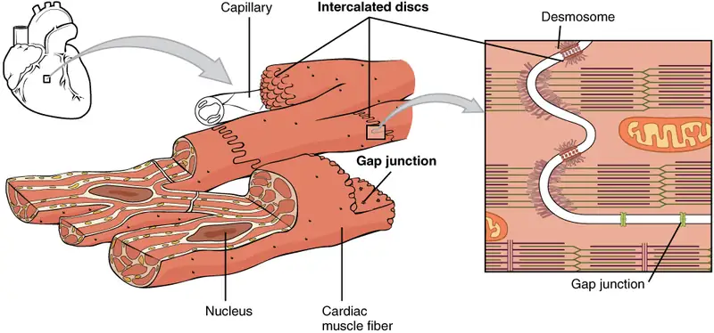
Contractions of the heart (heartbeats) are controlled by specialized cardiac muscle cells called pacemaker cells that directly control heart rate. Although cardiac muscle cannot be consciously controlled, the pacemaker cells respond to signals from the autonomic nervous system (ANS) to speed up or slow down the heart rate. The pacemaker cells can also respond to various hormones that modulate heart rate to control blood pressure.
The wave of contraction that allows the heart to work as a unit, called a functional syncytium, begins with the pacemaker cells. This group of cells is self-excitable and able to depolarize to threshold and fire action potentials on their own, a feature called autorhythmicity; they do this at set intervals which determine heart rate. Because they are connected with gap junctions to surrounding muscle fibers and the specialized fibers of the heart’s conduction system, the pacemaker cells are able to transfer the depolarization to the other cardiac muscle fibers in a manner that allows the heart to contract in a coordinated manner.
Another feature of cardiac muscle is its relatively long action potentials in its fibers, having a sustained depolarization “plateau.” The plateau is produced by Ca++ entry though voltage-gated calcium channels in the sarcolemma of cardiac muscle fibers. This sustained depolarization (and Ca++ entry) provides for a longer contraction than is produced by an action potential in skeletal muscle. Unlike skeletal muscle, a large percentage of the Ca++ that initiates contraction in cardiac muscles comes from outside the cell rather than from the SR.
10.8 Smooth Muscle¶
Learning Objectives
By the end of this section, you will be able to:
- Describe a dense body
- Explain how smooth muscle works with internal organs and passageways through the body
- Explain how smooth muscles differ from skeletal and cardiac muscles
- Explain the difference between single-unit and multi-unit smooth muscle
Smooth muscle (so-named because the cells do not have striations) is present in the walls of hollow organs like the urinary bladder, uterus, stomach, intestines, and in the walls of passageways, such as the arteries and veins of the circulatory system, and the tracts of the respiratory, urinary, and reproductive systems (Figure 10.23ab). Smooth muscle is also present in the eyes, where it functions to change the size of the iris and alter the shape of the lens; and in the skin where it causes hair to stand erect in response to cold temperature or fear.
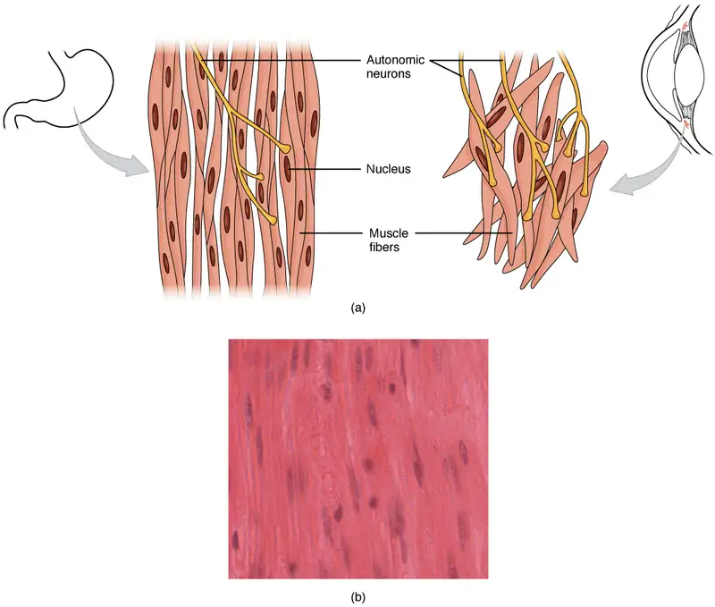
Interactive
View the University of Michigan WebScope to explore the tissue sample in greater detail.
Smooth muscle fibers are spindle-shaped (wide in the middle and tapered at both ends, somewhat like a football) and have a single nucleus; they range from about 30 to 200 μm (thousands of times shorter than skeletal muscle fibers), and they produce their own connective tissue, endomysium. Although they do not have striations and sarcomeres, smooth muscle fibers do have actin and myosin contractile proteins, and thick and thin filaments. These thin filaments are anchored by dense bodies. A dense body is analogous to the Z-discs of skeletal and cardiac muscle fibers and is fastened to the sarcolemma. Calcium ions are supplied by the SR in the fibers and by sequestration from the extracellular fluid through membrane indentations called calveoli.
Because smooth muscle cells do not contain troponin, cross-bridge formation is not regulated by the troponin-tropomyosin complex but instead by the regulatory protein calmodulin. In a smooth muscle fiber, external Ca++ ions passing through opened calcium channels in the sarcolemma, and additional Ca++ released from SR, bind to calmodulin. The Ca++-calmodulin complex then activates an enzyme called myosin (light chain) kinase, which, in turn, activates the myosin heads by phosphorylating them (converting ATP to ADP and Pi, with the Pi attaching to the head). The heads can then attach to actin-binding sites and pull on the thin filaments. The thin filaments also are anchored to the dense bodies; the structures invested in the inner membrane of the sarcolemma (at adherens junctions) that also have cord-like intermediate filaments attached to them. When the thin filaments slide past the thick filaments, they pull on the dense bodies, structures tethered to the sarcolemma, which then pull on the intermediate filaments networks throughout the sarcoplasm. This arrangement causes the entire muscle fiber to contract in a manner whereby the ends are pulled toward the center, causing the midsection to bulge in a corkscrew motion (Figure 10.24).
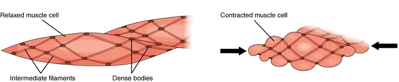
Although smooth muscle contraction relies on the presence of Ca++ ions, smooth muscle fibers have a much smaller diameter than skeletal muscle cells. T-tubules are not required to reach the interior of the cell and therefore not necessary to transmit an action potential deep into the fiber. Smooth muscle fibers have a limited calcium-storing SR but have calcium channels in the sarcolemma (similar to cardiac muscle fibers) that open during the action potential along the sarcolemma. The influx of extracellular Ca++ ions, which diffuse into the sarcoplasm to reach the calmodulin, accounts for most of the Ca++ that triggers contraction of a smooth muscle cell.
Muscle contraction continues until ATP-dependent calcium pumps actively transport Ca++ ions back into the SR and out of the cell. However, a low concentration of calcium remains in the sarcoplasm to maintain muscle tone. This remaining calcium keeps the muscle slightly contracted, which is important in certain tracts and around blood vessels.
Because most smooth muscles must function for long periods without rest, their power output is relatively low, but contractions can continue without using large amounts of energy. Some smooth muscle can also maintain contractions even as Ca++ is removed and myosin kinase is inactivated/dephosphorylated. This can happen as a subset of cross-bridges between myosin heads and actin, called latch-bridges, keep the thick and thin filaments linked together for a prolonged period, and without the need for ATP. This allows for the maintaining of muscle “tone” in smooth muscle that lines arterioles and other visceral organs with very little energy expenditure.
Smooth muscle is not under voluntary control; thus, it is called involuntary muscle. The triggers for smooth muscle contraction include hormones, neural stimulation by the ANS, and local factors. In certain locations, such as the walls of visceral organs, stretching the muscle can trigger its contraction (the stress-relaxation response).
Axons of neurons in the ANS do not form the highly organized NMJs with smooth muscle, as seen between motor neurons and skeletal muscle fibers. Instead, there is a series of neurotransmitter-filled bulges called varicosities as an axon courses through smooth muscle, loosely forming motor units (Figure 10.25). A varicosity releases neurotransmitters into the synaptic cleft. Also, visceral muscle in the walls of the hollow organs (except the heart) contains pacesetter cells. A pacesetter cell can spontaneously trigger action potentials and contractions in the muscle.
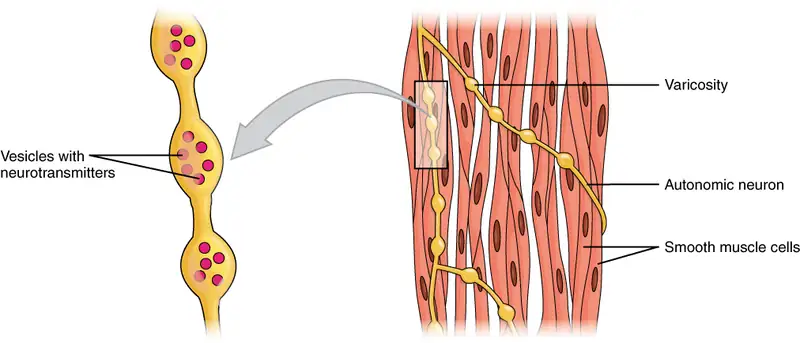
Smooth muscle is organized in two ways: as single-unit smooth muscle, which is much more common; and as multiunit smooth muscle. The two types have different locations in the body and have different characteristics. Single-unit muscle has its muscle fibers joined by gap junctions so that the muscle contracts as a single unit. This type of smooth muscle is found in the walls of all visceral organs except the heart (which has cardiac muscle in its walls), and so it is commonly called visceral muscle. Because the muscle fibers are not constrained by the organization and stretchability limits of sarcomeres, visceral smooth muscle has a stress-relaxation response. This means that as the muscle of a hollow organ is stretched when it fills, the mechanical stress of the stretching will trigger contraction, but this is immediately followed by relaxation so that the organ does not empty its contents prematurely. This is important for hollow organs, such as the stomach or urinary bladder, which continuously expand as they fill. The smooth muscle around these organs also can maintain a muscle tone when the organ empties and shrinks, a feature that prevents “flabbiness” in the empty organ. In general, visceral smooth muscle produces slow, steady contractions that allow substances, such as food in the digestive tract, to move through the body.
Multiunit smooth muscle cells rarely possess gap junctions, and thus are not electrically coupled. As a result, contraction does not spread from one cell to the next, but is instead confined to the cell that was originally stimulated. Stimuli for multiunit smooth muscles come from autonomic nerves or hormones but not from stretching. This type of tissue is found around large blood vessels, in the respiratory airways, and in the eyes.
Hyperplasia in Smooth Muscle¶
Similar to skeletal and cardiac muscle cells, smooth muscle can undergo hypertrophy to increase in size. Unlike other muscle, smooth muscle can also divide to produce more cells, a process called hyperplasia. This can most evidently be observed in the uterus at puberty, which responds to increased estrogen levels by producing more uterine smooth muscle fibers, and greatly increases the size of the myometrium.
10.9 Development and Regeneration of Muscle Tissue¶
Learning Objectives
By the end of this section, you will be able to:
- Describe the function of satellite cells
- Define fibrosis
- Explain which muscle has the greatest regeneration ability
Most muscle tissue of the body arises from embryonic mesoderm. Paraxial mesodermal cells adjacent to the neural tube form blocks of cells called somites. Skeletal muscles, excluding those of the head and limbs, develop from mesodermal somites, whereas skeletal muscle in the head and limbs develop from general mesoderm. Somites give rise to myoblasts. A myoblast is a muscle-forming stem cell that migrates to different regions in the body and then fuse(s) to form a syncytium, or myotube. As a myotube is formed from many different myoblast cells, it contains many nuclei, but has a continuous cytoplasm. This is why skeletal muscle cells are multinucleate, as the nucleus of each contributing myoblast remains intact in the mature skeletal muscle cell. However, cardiac and smooth muscle cells are not multinucleate because the myoblasts that form their cells do not fuse.
Gap junctions develop in the cardiac and single-unit smooth muscle in the early stages of development. In skeletal muscles, ACh receptors are initially present along most of the surface of the myoblasts, but spinal nerve innervation causes the release of growth factors that stimulate the formation of motor end-plates and NMJs. As neurons become active, electrical signals that are sent through the muscle influence the distribution of slow and fast fibers in the muscle.
Although the number of muscle cells is set during development, satellite cells help to repair skeletal muscle cells. A satellite cell is similar to a myoblast because it is a type of stem cell; however, satellite cells are incorporated into muscle cells and facilitate the protein synthesis required for repair and growth. These cells are located outside the sarcolemma and are stimulated to grow and fuse with muscle cells by growth factors that are released by muscle fibers under certain forms of stress. Satellite cells can regenerate muscle fibers to a very limited extent, but they primarily help to repair damage in living cells. If a cell is damaged to a greater extent than can be repaired by satellite cells, the muscle fibers are replaced by scar tissue in a process called fibrosis. Because scar tissue cannot contract, muscle that has sustained significant damage loses strength and cannot produce the same amount of power or endurance as it could before being damaged.
Smooth muscle tissue can regenerate from a type of stem cell called a pericyte, which is found in some small blood vessels. Pericytes allow smooth muscle cells to regenerate and repair much more readily than skeletal and cardiac muscle tissue. Similar to skeletal muscle tissue, cardiac muscle does not regenerate to a great extent. Dead cardiac muscle tissue is replaced by scar tissue, which cannot contract. As scar tissue accumulates, the heart loses its ability to pump because of the loss of contractile power. However, some minor regeneration may occur due to stem cells found in the blood that occasionally enter cardiac tissue.
Career Connection: Physical Therapist
As muscle cells die, they are not regenerated but instead are replaced by connective tissue and adipose tissue, which do not possess the contractile abilities of muscle tissue. Muscles atrophy when they are not used, and over time if atrophy is prolonged, muscle cells die. It is therefore important that those who are susceptible to muscle atrophy exercise to maintain muscle function and prevent the complete loss of muscle tissue. In extreme cases, when movement is not possible, electrical stimulation can be introduced to a muscle from an external source. This acts as a substitute for endogenous neural stimulation, stimulating the muscle to contract and preventing the loss of proteins that occurs with a lack of use.
Physiotherapists work with patients to maintain muscles. They are trained to target muscles susceptible to atrophy, and to prescribe and monitor exercises designed to stimulate those muscles. There are various causes of atrophy, including mechanical injury, disease, and age. After breaking a limb or undergoing surgery, muscle use is impaired and can lead to disuse atrophy. If the muscles are not exercised, this atrophy can lead to long-term muscle weakness. A stroke can also cause muscle impairment by interrupting neural stimulation to certain muscles. Without neural inputs, these muscles do not contract and thus begin to lose structural proteins. Exercising these muscles can help to restore muscle function and minimize functional impairments. Age-related muscle loss is also a target of physical therapy, as exercise can reduce the effects of age-related atrophy and improve muscle function.
The goal of a physiotherapist is to improve physical functioning and reduce functional impairments; this is achieved by understanding the cause of muscle impairment and assessing the capabilities of a patient, after which a program to enhance these capabilities is designed. Some factors that are assessed include strength, balance, and endurance, which are continually monitored as exercises are introduced to track improvements in muscle function. Physiotherapists can also instruct patients on the proper use of equipment, such as crutches, and assess whether someone has sufficient strength to use the equipment and when they can function without it.
Chapter Review¶
Key Terms¶
- acetylcholine (ACh)
- neurotransmitter that binds at a motor end-plate to trigger depolarization
- actin
- protein that makes up most of the thin myofilaments in a sarcomere muscle fiber
- action potential
- change in voltage of a cell membrane in response to a stimulus that results in transmission of an electrical signal; unique to neurons and muscle fibers
- aerobic respiration
- production of ATP in the presence of oxygen
- angiogenesis
- formation of blood capillary networks
- aponeurosis
- broad, tendon-like sheet of connective tissue that attaches a skeletal muscle to another skeletal muscle or to a bone
- ATPase
- enzyme that hydrolyzes ATP to ADP
- atrophy
- loss of structural proteins from muscle fibers
- autorhythmicity
- heart’s ability to control its own contractions
- calmodulin
- regulatory protein that facilitates contraction in smooth muscles
- cardiac muscle
- striated muscle found in the heart; joined to one another at intercalated discs and under the regulation of pacemaker cells, which contract as one unit to pump blood through the circulatory system. Cardiac muscle is under involuntary control.
- concentric contraction
- muscle contraction that shortens the muscle to move a load
- contractility
- ability to shorten (contract) forcibly
- contraction phase
- twitch contraction phase when tension increases
- creatine phosphate
- phosphagen used to store energy from ATP and transfer it to muscle
- dense body
- sarcoplasmic structure that attaches to the sarcolemma and shortens the muscle as thin filaments slide past thick filaments
- depolarize
- to reduce the voltage difference between the inside and outside of a cell’s plasma membrane (the sarcolemma for a muscle fiber), making the inside less negative than at rest
- desmosome
- cell structure that anchors the ends of cardiac muscle fibers to allow contraction to occur
- eccentric contraction
- muscle contraction that lengthens the muscle as the tension is diminished
- elasticity
- ability to stretch and rebound
- endomysium
- loose, and well-hydrated connective tissue covering each muscle fiber in a skeletal muscle
- epimysium
- outer layer of connective tissue around a skeletal muscle
- excitability
- ability to undergo neural stimulation
- excitation-contraction coupling
- sequence of events from motor neuron signaling to a skeletal muscle fiber to contraction of the fiber’s sarcomeres
- extensibility
- ability to lengthen (extend)
- fascicle
- bundle of muscle fibers within a skeletal muscle
- fast glycolytic (FG)
- muscle fiber that primarily uses anaerobic glycolysis
- fast oxidative (FO)
- intermediate muscle fiber that is between slow oxidative and fast glycolytic fibers
- fibrosis
- replacement of muscle fibers by scar tissue
- glycolysis
- anaerobic breakdown of glucose to ATP
- graded muscle response
- modification of contraction strength
- hyperplasia
- process in which one cell splits to produce new cells
- hypertonia
- abnormally high muscle tone
- hypertrophy
- addition of structural proteins to muscle fibers
- hypotonia
- abnormally low muscle tone caused by the absence of low-level contractions
- intercalated disc
- part of the sarcolemma that connects cardiac tissue, and contains gap junctions and desmosomes
- isometric contraction
- muscle contraction that occurs with no change in muscle length
- isotonic contraction
- muscle contraction that involves changes in muscle length
- lactic acid
- product of anaerobic glycolysis
- latch-bridges
- subset of a cross-bridge in which actin and myosin remain locked together
- latent period
- the time when a twitch does not produce contraction
- motor end-plate
- sarcolemma of muscle fiber at the neuromuscular junction, with receptors for the neurotransmitter acetylcholine
- motor unit
- motor neuron and the group of muscle fibers it innervates
- muscle tension
- force generated by the contraction of the muscle; tension generated during isotonic contractions and isometric contractions
- muscle tone
- low levels of muscle contraction that occur when a muscle is not producing movement
- myoblast
- muscle-forming stem cell
- myofibril
- long, cylindrical organelle that runs parallel within the muscle fiber and contains the sarcomeres
- myogram
- instrument used to measure twitch tension
- myosin
- protein that makes up most of the thick cylindrical myofilament within a sarcomere muscle fiber
- myotube
- fusion of many myoblast cells
- neuromuscular junction (NMJ)
- synapse between the axon terminal of a motor neuron and the section of the membrane of a muscle fiber with receptors for the acetylcholine released by the terminal
- neurotransmitter
- signaling chemical released by nerve terminals that bind to and activate receptors on target cells
- oxygen debt
- amount of oxygen needed to compensate for ATP produced without oxygen during muscle contraction
- pacesetter cell
- cell that triggers action potentials in smooth muscle
- pericyte
- stem cell that regenerates smooth muscle cells
- perimysium
- connective tissue that bundles skeletal muscle fibers into fascicles within a skeletal muscle
- power stroke
- action of myosin pulling actin inward (toward the M line)
- pyruvic acid
- product of glycolysis that can be used in aerobic respiration or converted to lactic acid
- recruitment
- increase in the number of motor units involved in contraction
- relaxation phase
- period after twitch contraction when tension decreases
- sarcolemma
- plasma membrane of a skeletal muscle fiber
- sarcomere
- longitudinally, repeating functional unit of skeletal muscle, with all of the contractile and associated proteins involved in contraction
- sarcopenia
- age-related muscle atrophy
- sarcoplasm
- cytoplasm of a muscle cell
- sarcoplasmic reticulum (SR)
- specialized smooth endoplasmic reticulum, which stores, releases, and retrieves Ca++
- satellite cell
- stem cell that helps to repair muscle cells
- skeletal muscle
- striated, multinucleated muscle that requires signaling from the nervous system to trigger contraction; most skeletal muscles are referred to as voluntary muscles that move bones and produce movement
- slow oxidative (SO)
- muscle fiber that primarily uses aerobic respiration
- smooth muscle
- nonstriated, mononucleated muscle in the skin that is associated with hair follicles; assists in moving materials in the walls of internal organs, blood vessels, and internal passageways
- somites
- blocks of paraxial mesoderm cells
- stress-relaxation response
- relaxation of smooth muscle tissue after being stretched
- synaptic cleft
- space between a nerve (axon) terminal and a motor end-plate
- T-tubule
- projection of the sarcolemma into the interior of the cell
- tetanus
- a continuous fused contraction
- thick filament
- the thick myosin strands and their multiple heads projecting from the center of the sarcomere toward, but not all to way to, the Z-discs
- thin filament
- thin strands of actin and its troponin-tropomyosin complex projecting from the Z-discs toward the center of the sarcomere
- treppe
- stepwise increase in contraction tension
- triad
- the grouping of one T-tubule and two terminal cisternae
- tropomyosin
- regulatory protein that covers myosin-binding sites to prevent actin from binding to myosin
- troponin
- regulatory protein that binds to actin, tropomyosin, and calcium
- twitch
- single contraction produced by one action potential
- varicosity
- enlargement of neurons that release neurotransmitters into synaptic clefts
- visceral muscle
- smooth muscle found in the walls of visceral organs
- voltage-gated sodium channels
- membrane proteins that open sodium channels in response to a sufficient voltage change, and initiate and transmit the action potential as Na+ enters through the channel
- wave summation
- addition of successive neural stimuli to produce greater contraction
Chapter Review¶
10.1 Overview of Muscle Tissues¶
Muscle is the tissue in animals that allows for active movement of the body or materials within the body. There are three types of muscle tissue: skeletal muscle, cardiac muscle, and smooth muscle. Most of the body’s skeletal muscle produces movement by acting on the skeleton. Cardiac muscle is found in the wall of the heart and pumps blood through the circulatory system.
Smooth muscle is found in the skin, where it is associated with hair follicles; it also is found in the walls of internal organs, blood vessels, and internal passageways, where it assists in moving materials.
10.2 Skeletal Muscle¶
Skeletal muscles contain connective tissue, blood vessels, and nerves. There are three layers of connective tissue: epimysium, perimysium, and endomysium. Skeletal muscle fibers are organized into groups called fascicles. Blood vessels and nerves enter the connective tissue and branch in the cell. Muscles attach to bones directly or through tendons or aponeuroses. Skeletal muscles maintain posture, stabilize bones and joints, control internal movement, and generate heat.
Skeletal muscle fibers are long, multinucleated cells. The membrane of the cell is the sarcolemma; the cytoplasm of the cell is the sarcoplasm. The sarcoplasmic reticulum (SR) is a form of endoplasmic reticulum. Muscle fibers are composed of myofibrils. The striations are created by the organization of actin and myosin resulting in the banding pattern of myofibrils.
10.3 Muscle Fiber Contraction and Relaxation¶
A sarcomere is the smallest contractile portion of a muscle. Myofibrils are composed of thick and thin filaments. Thick filaments are composed of the protein myosin; thin filaments are composed of the protein actin. Troponin and tropomyosin are regulatory proteins.
Muscle contraction is described by the sliding filament model of contraction. ACh is the neurotransmitter that binds at the neuromuscular junction (NMJ) to trigger depolarization, and an action potential travels along the sarcolemma to trigger calcium release from SR. The actin sites are exposed after Ca++ enters the sarcoplasm from its SR storage to activate the troponin-tropomyosin complex so that the tropomyosin shifts away from the sites. The cross-bridging of myosin heads docking into actin-binding sites is followed by the “power stroke”—the sliding of the thin filaments by thick filaments. The power strokes are powered by ATP. Ultimately, the sarcomeres, myofibrils, and muscle fibers shorten to produce movement.
10.4 Nervous System Control of Muscle Tension¶
The number of cross-bridges formed between actin and myosin determines the amount of tension produced by a muscle. The length of a sarcomere is optimal when the zone of overlap between thin and thick filaments is greatest. Muscles that are stretched or compressed too greatly do not produce maximal amounts of power. A motor unit is formed by a motor neuron and all of the muscle fibers that are innervated by that same motor neuron. A single contraction is called a twitch. A muscle twitch has a latent period, a contraction phase, and a relaxation phase. A graded muscle response allows variation in muscle tension. Summation occurs as successive stimuli are added together to produce a stronger muscle contraction. Tetanus is the fusion of contractions to produce a continuous contraction. Increasing the number of motor neurons involved increases the amount of motor units activated in a muscle, which is called recruitment. Muscle tone is the constant low-level contractions that allow for posture and stability.
10.5 Types of Muscle Fibers¶
ATP provides the energy for muscle contraction. The three mechanisms for ATP regeneration are creatine phosphate, anaerobic glycolysis, and aerobic metabolism. Creatine phosphate provides about the first 15 seconds of ATP at the beginning of muscle contraction. Anaerobic glycolysis produces small amounts of ATP in the absence of oxygen for a short period. Aerobic metabolism utilizes oxygen to produce much more ATP, allowing a muscle to work for longer periods. Muscle fatigue, which has many contributing factors, occurs when muscle can no longer contract. An oxygen debt is created as a result of muscle use. The three types of muscle fiber are slow oxidative (SO), fast oxidative (FO) and fast glycolytic (FG). SO fibers use aerobic metabolism to produce low power contractions over long periods and are slow to fatigue. FO fibers use aerobic metabolism to produce ATP but produce higher tension contractions than SO fibers. FG fibers use anaerobic metabolism to produce powerful, high-tension contractions but fatigue quickly.
10.6 Exercise and Muscle Performance¶
Hypertrophy is an increase in muscle mass due to the addition of structural proteins. The opposite of hypertrophy is atrophy, the loss of muscle mass due to the breakdown of structural proteins. Endurance exercise causes an increase in cellular mitochondria, myoglobin, and capillary networks in SO fibers. Endurance athletes have a high level of SO fibers relative to the other fiber types. Resistance exercise causes hypertrophy. Power-producing muscles have a higher number of FG fibers than of slow fibers. Strenuous exercise causes muscle cell damage that requires time to heal. Some athletes use performance-enhancing substances to enhance muscle performance. Muscle atrophy due to age is called sarcopenia and occurs as muscle fibers die and are replaced by connective and adipose tissue.
10.7 Cardiac Muscle Tissue¶
Cardiac muscle is striated muscle that is present only in the heart. Cardiac muscle fibers have a single nucleus, are branched, and joined to one another by intercalated discs that contain gap junctions for depolarization between cells and desmosomes to hold the fibers together when the heart contracts. Contraction in each cardiac muscle fiber is triggered by Ca++ ions in a similar manner as skeletal muscle, but here the Ca++ ions come from SR and through voltage-gated calcium channels in the sarcolemma. Pacemaker cells stimulate the spontaneous contraction of cardiac muscle as a functional unit, called a syncytium.
10.8 Smooth Muscle¶
Smooth muscle is found throughout the body around various organs and tracts. Smooth muscle cells have a single nucleus, and are spindle-shaped. Smooth muscle cells can undergo hyperplasia, mitotically dividing to produce new cells. The smooth cells are nonstriated, but their sarcoplasm is filled with actin and myosin, along with dense bodies in the sarcolemma to anchor the thin filaments and a network of intermediate filaments involved in pulling the sarcolemma toward the fiber’s middle, shortening it in the process. Ca++ ions trigger contraction when they are released from SR and enter through opened voltage-gated calcium channels. Smooth muscle contraction is initiated when the Ca++ binds to intracellular calmodulin, which then activates an enzyme called myosin kinase that phosphorylates myosin heads so they can form the cross-bridges with actin and then pull on the thin filaments. Smooth muscle can be stimulated by pacesetter cells, by the autonomic nervous system, by hormones, spontaneously, or by stretching. The fibers in some smooth muscle have latch-bridges, cross-bridges that cycle slowly without the need for ATP; these muscles can maintain low-level contractions for long periods. Single-unit smooth muscle tissue contains gap junctions to synchronize membrane depolarization and contractions so that the muscle contracts as a single unit. Single-unit smooth muscle in the walls of the viscera, called visceral muscle, has a stress-relaxation response that permits muscle to stretch, contract, and relax as the organ expands. Multiunit smooth muscle cells do not possess gap junctions, and contraction does not spread from one cell to the next.
10.9 Development and Regeneration of Muscle Tissue¶
Muscle tissue arises from embryonic mesoderm. Somites give rise to myoblasts and fuse to form a myotube. The nucleus of each contributing myoblast remains intact in the mature skeletal muscle cell, resulting in a mature, multinucleate cell. Satellite cells help to repair skeletal muscle cells. Smooth muscle tissue can regenerate from stem cells called pericytes, whereas dead cardiac muscle tissue is replaced by scar tissue. Aging causes muscle mass to decrease and be replaced by noncontractile connective tissue and adipose tissue.
Review Questions¶
10.1 Overview of Muscle Tissues¶
1. Muscle that has a striped appearance is described as being ________.
- elastic
- nonstriated
- excitable
- striated
Answer
D
2. Which element is important in directly triggering contraction?
- sodium (Na+)
- calcium (Ca++)
- potassium (K+)
- chloride (Cl-)
Answer
B
3. Which of the following properties is not common to all three muscle tissues?
- excitability
- the need for ATP
- at rest, uses shielding proteins to cover actin-binding sites
- elasticity
Answer
C
10.2 Skeletal Muscle¶
4. The correct order for the smallest to the largest unit of organization in muscle tissue is ________.
- fascicle, filament, muscle fiber, myofibril
- filament, myofibril, muscle fiber, fascicle
- muscle fiber, fascicle, filament, myofibril
- myofibril, muscle fiber, filament, fascicle
Answer
B
5. Depolarization of the sarcolemma means ________.
- the inside of the membrane has become less negative as sodium ions accumulate
- the outside of the membrane has become less negative as sodium ions accumulate
- the inside of the membrane has become more negative as sodium ions accumulate
- the sarcolemma has completely lost any electrical charge
Answer
A
10.3 Muscle Fiber Contraction and Relaxation¶
6. In relaxed muscle, the myosin-binding site on actin is blocked by ________.
- titin
- troponin
- myoglobin
- tropomyosin
Answer
D
7. According to the sliding filament model, binding sites on actin open when ________.
- creatine phosphate levels rise
- ATP levels rise
- acetylcholine levels rise
- calcium ion levels rise
Answer
D
8. The cell membrane of a muscle fiber is called ________.
- myofibril
- sarcolemma
- sarcoplasm
- myofilament
Answer
B
9. Muscle relaxation occurs when ________.
- calcium ions are actively transported out of the sarcoplasmic reticulum
- calcium ions diffuse out of the sarcoplasmic reticulum
- calcium ions are actively transported into the sarcoplasmic reticulum
- calcium ions diffuse into the sarcoplasmic reticulum
Answer
C
10. During muscle contraction, the cross-bridge detaches when ________.
- the myosin head binds to an ADP molecule
- the myosin head binds to an ATP molecule
- calcium ions bind to troponin
- calcium ions bind to actin
Answer
B
11. Thin and thick filaments are organized into functional units called ________.
- myofibrils
- myofilaments
- T-tubules
- sarcomeres
Answer
D
10.4 Nervous System Control of Muscle Tension¶
12. During which phase of a twitch in a muscle fiber is tension the greatest?
- resting phase
- repolarization phase
- contraction phase
- relaxation phase
Answer
C
10.5 Types of Muscle Fibers¶
13. Muscle fatigue is caused by ________.
- buildup of ATP and lactic acid levels
- exhaustion of energy reserves and buildup of lactic acid levels
- buildup of ATP and pyruvic acid levels
- exhaustion of energy reserves and buildup of pyruvic acid levels
Answer
B
14. A sprinter would experience muscle fatigue sooner than a marathon runner due to ________.
- anaerobic metabolism in the muscles of the sprinter
- anaerobic metabolism in the muscles of the marathon runner
- aerobic metabolism in the muscles of the sprinter
- glycolysis in the muscles of the marathon runner
Answer
A
15. What aspect of creatine phosphate allows it to supply energy to muscles?
- ATPase activity
- phosphate bonds
- carbon bonds
- hydrogen bonds
Answer
B
16. Drug X blocks ATP regeneration from ADP and phosphate. How will muscle cells respond to this drug?
- by absorbing ATP from the bloodstream
- by using ADP as an energy source
- by using glycogen as an energy source
- none of the above
Answer
D
10.6 Exercise and Muscle Performance¶
17. The muscles of a professional sprinter are most likely to have ________.
- 80 percent fast-twitch muscle fibers and 20 percent slow-twitch muscle fibers
- 20 percent fast-twitch muscle fibers and 80 percent slow-twitch muscle fibers
- 50 percent fast-twitch muscle fibers and 50 percent slow-twitch muscle fibers
- 40 percent fast-twitch muscle fibers and 60 percent slow-twitch muscle fibers
Answer
A
18. The muscles of a professional marathon runner are most likely to have ________.
- 80 percent fast-twitch muscle fibers and 20 percent slow-twitch muscle fibers
- 20 percent fast-twitch muscle fibers and 80 percent slow-twitch muscle fibers
- 50 percent fast-twitch muscle fibers and 50 percent slow-twitch muscle fibers
- 40 percent fast-twitch muscle fibers and 60 percent slow-twitch muscle fibers
Answer
B
19. Which of the following statements is true?
- Fast fibers have a small diameter.
- Fast fibers contain loosely packed myofibrils.
- Fast fibers have large glycogen reserves.
- Fast fibers have many mitochondria.
Answer
C
20. Which of the following statements is false?
- Slow fibers have a small network of capillaries.
- Slow fibers contain the pigment myoglobin.
- Slow fibers contain a large number of mitochondria.
- Slow fibers contract for extended periods.
Answer
A
10.7 Cardiac Muscle Tissue¶
21. Cardiac muscles differ from skeletal muscles in that they ________.
- are striated
- utilize aerobic metabolism
- contain myofibrils
- contain intercalated discs
Answer
D
22. If cardiac muscle cells were prevented from undergoing aerobic metabolism, they ultimately would ________.
- undergo glycolysis
- synthesize ATP
- stop contracting
- start contracting
Answer
C
10.8 Smooth Muscle¶
23. Smooth muscles differ from skeletal and cardiac muscles in that they ________.
- lack myofibrils
- are under voluntary control
- lack myosin
- lack actin
Answer
A
24. Which of the following statements describes smooth muscle cells?
- They are resistant to fatigue.
- They have a rapid onset of contractions.
- They cannot exhibit tetanus.
- They primarily use anaerobic metabolism.
Answer
A
10.9 Development and Regeneration of Muscle Tissue¶
25. From which embryonic cell type does muscle tissue develop?
- ganglion cells
- myotube cells
- myoblast cells
- satellite cells
Answer
C
26. Which cell type helps to repair injured muscle fibers?
- ganglion cells
- myotube cells
- myoblast cells
- satellite cells
Answer
D
Critical Thinking Questions¶
10.1 Overview of Muscle Tissues¶
27. Why is elasticity an important quality of muscle tissue?
Answer
It allows muscle to return to its original length during relaxation after contraction.
10.2 Skeletal Muscle¶
28. What would happen to skeletal muscle if the epimysium were destroyed?
Answer
Muscles would lose their integrity during powerful movements, resulting in muscle damage.
29. Describe how tendons facilitate body movement.
Answer
When a muscle contracts, the force of movement is transmitted through the tendon, which pulls on the bone to produce skeletal movement.
30. What are the five primary functions of skeletal muscle?
Answer
Produce movement of the skeleton, maintain posture and body position, support soft tissues, encircle openings of the digestive, urinary, and other tracts, and maintain body temperature.
31. What are the opposite roles of voltage-gated sodium channels and voltage-gated potassium channels?
Answer
The opening of voltage-gated sodium channels, followed by the influx of Na+, transmits an Action Potential after the membrane has sufficiently depolarized. The delayed opening of potassium channels allows K+ to exit the cell, to repolarize the membrane.
10.3 Muscle Fiber Contraction and Relaxation¶
32. How would muscle contractions be affected if skeletal muscle fibers did not have T-tubules?
Answer
Without T-tubules, action potential conduction into the interior of the cell would happen much more slowly, causing delays between neural stimulation and muscle contraction, resulting in slower, weaker contractions.
33. What causes the striated appearance of skeletal muscle tissue?
Answer
Dark A bands and light I bands repeat along myofibrils, and the alignment of myofibrils in the cell cause the entire cell to appear striated.
34. How would muscle contractions be affected if ATP was completely depleted in a muscle fiber?
Answer
Without ATP, the myosin heads cannot detach from the actin-binding sites. All of the “stuck” cross-bridges result in muscle stiffness. In a live person, this can cause a condition like “writer’s cramps.” In a recently dead person, it results in rigor mortis.
10.4 Nervous System Control of Muscle Tension¶
35. Why does a motor unit of the eye have few muscle fibers compared to a motor unit of the leg?
Answer
Eyes require fine movements and a high degree of control, which is permitted by having fewer muscle fibers associated with a neuron.
36. What factors contribute to the amount of tension produced in an individual muscle fiber?
Answer
The length, size and types of muscle fiber and the frequency of neural stimulation contribute to the amount of tension produced in an individual muscle fiber.
10.5 Types of Muscle Fibers¶
37. Why do muscle cells use creatine phosphate instead of glycolysis to supply ATP for the first few seconds of muscle contraction?
Answer
Creatine phosphate is used because creatine phosphate and ADP are converted very quickly into ATP by creatine kinase. Glycolysis cannot generate ATP as quickly as creatine phosphate.
38. Is aerobic respiration more or less efficient than glycolysis? Explain your answer.
Answer
Aerobic respiration is much more efficient than anaerobic glycolysis, yielding 36 ATP per molecule of glucose, as opposed to two ATP produced by glycolysis.
10.6 Exercise and Muscle Performance¶
39. What changes occur at the cellular level in response to endurance training?
Answer
Endurance training modifies slow fibers to make them more efficient by producing more mitochondria to enable more aerobic metabolism and more ATP production. Endurance exercise can also increase the amount of myoglobin in a cell and formation of more extensive capillary networks around the fiber.
40. What changes occur at the cellular level in response to resistance training?
Answer
Resistance exercises affect muscles by causing the formation of more actin and myosin, increasing the structure of muscle fibers.
10.7 Cardiac Muscle Tissue¶
41. What would be the drawback of cardiac contractions being the same duration as skeletal muscle contractions?
Answer
An action potential could reach a cardiac muscle cell before it has entered the relaxation phase, resulting in the sustained contractions of tetanus. If this happened, the heart would not beat regularly.
42. How are cardiac muscle cells similar to and different from skeletal muscle cells?
Answer
Cardiac and skeletal muscle cells both contain ordered myofibrils and are striated. Cardiac muscle cells are branched and contain intercalated discs, which skeletal muscles do not have.
10.8 Smooth Muscle¶
43. Why can smooth muscles contract over a wider range of resting lengths than skeletal and cardiac muscle?
Answer
Smooth muscles can contract over a wider range of resting lengths because the actin and myosin filaments in smooth muscle are not as rigidly organized as those in skeletal and cardiac muscle.
44. Describe the differences between single-unit smooth muscle and multiunit smooth muscle.
Answer
Single-unit smooth muscle is found in the walls of hollow organs; multiunit smooth muscle is found in airways to the lungs and large arteries. Single-unit smooth muscle cells contract synchronously, they are coupled by gap junctions, and they exhibit spontaneous action potential. Multiunit smooth cells lack gap junctions, and their contractions are not synchronous.
10.9 Development and Regeneration of Muscle Tissue¶
45. Why is muscle that has sustained significant damage unable to produce the same amount of power as it could before being damaged?
Answer
If the damage exceeds what can be repaired by satellite cells, the damaged tissue is replaced by scar tissue, which cannot contract.
46. Which muscle type(s) (skeletal, smooth, or cardiac) can regenerate new muscle cells/fibers? Explain your answer.
Answer
Smooth muscle tissue can regenerate from stem cells called pericytes, cells found in some small blood vessels. These allow smooth muscle cells to regenerate and repair much more readily than skeletal and cardiac muscle tissue.
Interactive Link Questions¶
10.2 Skeletal Muscle¶
47. Watch this video to learn more about macro- and microstructures of skeletal muscles. (a) What are the names of the “junction points” between sarcomeres? (b) What are the names of the “subunits” within the myofibrils that run the length of skeletal muscle fibers? (c) What is the “double strand of pearls” described in the video? (d) What gives a skeletal muscle fiber its striated appearance?
Answer
(a) Z-lines. (b) Sarcomeres. (c) This is the arrangement of the actin and myosin filaments in a sarcomere. (d) The alternating strands of actin and myosin filaments.
48. Every skeletal muscle fiber is supplied by a motor neuron at the NMJ. Watch this video to learn more about what happens at the neuromuscular junction. (a) What is the definition of a motor unit? (b) What is the structural and functional difference between a large motor unit and a small motor unit? Can you give an example of each? (c) Why is the neurotransmitter acetylcholine degraded after binding to its receptor?
Answer
(a) It is the number of skeletal muscle fibers supplied by a single motor neuron. (b) A large motor unit has one neuron supplying many skeletal muscle fibers for gross movements, like the Temporalis muscle, where 1000 fibers are supplied by one neuron. A small motor has one neuron supplying few skeletal muscle fibers for very fine movements, like the extraocular eye muscles, where six fibers are supplied by one neuron. (c) To avoid prolongation of muscle contraction.
10.3 Muscle Fiber Contraction and Relaxation¶
49. The release of calcium ions initiates muscle contractions. Watch this video to learn more about the role of calcium. (a) What are “T-tubules” and what is their role? (b) Please also describe how actin-binding sites are made available for cross-bridging with myosin heads during contraction.
Answer
(a) The T-tubules are inward extensions of the sarcolemma that trigger the release of Ca++ from SR during an Action Potential. (b) Ca++ binds to troponin, and this slides the tropomyosin rods away from the binding sites.
Adapted from Anatomy and Physiology 2e by OpenStax, licensed under CC BY 4.0. Access the original for free at openstax.org. Changes: converted to the web reading format of The Open Book Project.